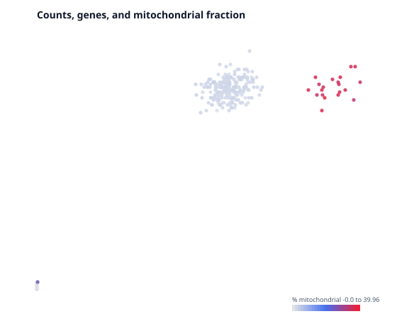
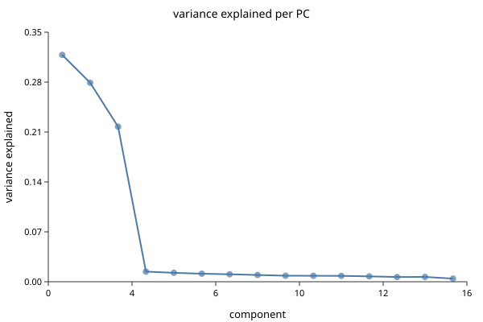
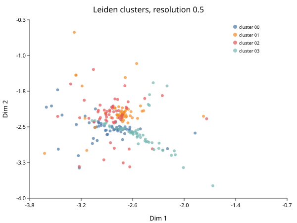
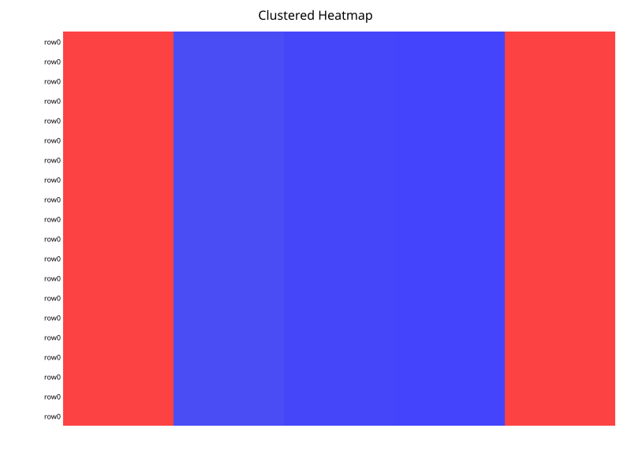
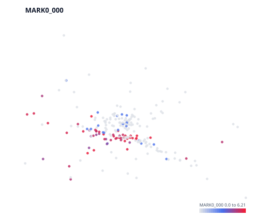
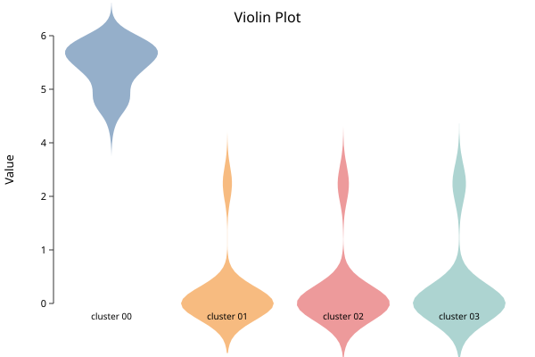
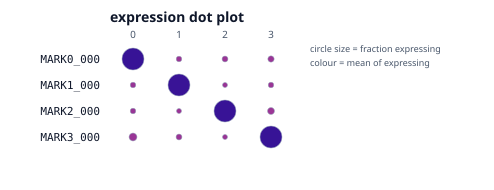

Single-Cell RNA-seq with BioLang
A tissue is not one thing. A blood sample contains many immune populations. A tumor contains malignant cells, immune cells, blood-vessel cells, connective tissue cells, and damaged cells. Bulk RNA sequencing mixes their RNA into one average. Single-cell RNA sequencing (scRNA-seq) measures thousands of those cells separately.
That extra detail is useful, but it creates a new problem: a colorful map can be easy to produce and easy to overinterpret. This book teaches both the workflow and the reasoning that makes the workflow defensible.
Who this book is for
- Biologists can connect laboratory decisions to computational artifacts.
- Researchers can turn a biological question into a reproducible analysis.
- Programmers can understand the data model, algorithms, and performance boundaries without first becoming molecular biologists.
- Clinicians can understand what a single-cell result does and does not say about a patient or treatment.
- Students and interested readers can begin without prior RNA-seq knowledge.
Each chapter answers five questions:
- What is this concept?
- Why does it matter?
- How is it represented or analyzed?
- When and where should it be used?
- What can fool us?
What you will build
You will analyze a deterministic, tumor-like 10x count matrix with four known cell populations. The fixture is intentionally small enough for a laptop and is generated locally rather than stored in the repository. You will:
- inspect raw counts and quality metrics;
- remove implausible cells and rarely detected genes;
- normalize counts and select variable genes;
- compute PCA, a neighbor graph, Leiden clusters, and UMAP;
- inspect markers and propose cell-type labels;
- compare BioLang clusters with Scanpy and Seurat;
- plan a replicate-aware multi-sample analysis;
- record the decisions needed to reproduce the result.
A necessary boundary
This book teaches research analysis. A cluster, marker, or association is not a clinical diagnosis. Clinical use requires an independently validated assay, quality system, predefined decision rule, appropriate population, regulatory review, and human oversight.
BioLang’s singlecell package is useful for transparent preprocessing,
exploration, and reproducible workflows. It does not make biological judgment
automatic. The analyst remains responsible for study design, metadata, cell
annotations, statistical units, and interpretation.
How to read it
Read Parts I and II in order on a first pass. Part III is organized by scientific question. Part IV should be read before publishing or handing a result to a collaborator. Terms in bold are collected in the glossary, and every package call is summarized in the API appendix.
One Tissue, Many Cells
The everyday analogy
Suppose a hospital asks whether patients are waiting too long. One number for the whole hospital hides the difference between emergency, radiology, pharmacy, and reception. Measuring each department separately reveals where the delay occurs.
Bulk RNA-seq is the hospital-wide average. Single-cell RNA-seq is closer to measuring each room separately. It can reveal a rare population, a changing cell state, or a different mixture of cells that the average hides.
What RNA tells us
DNA is a long-term instruction store. A gene is a named region that can contribute to a biological product. When a gene is active, the cell can make RNA copies called transcripts. Messenger RNA is not a direct measurement of protein, behavior, or disease, but its abundance is evidence about what a cell was doing when it was captured.
Single-cell RNA-seq asks: which RNA molecules were observed in each captured cell or nucleus?
The usual result is a matrix:
| Gene A | Gene B | Gene C | |
|---|---|---|---|
| Cell 1 | 0 | 4 | 1 |
| Cell 2 | 0 | 5 | 0 |
| Cell 3 | 7 | 0 | 2 |
Rows are cells, columns are genes, and entries are observed molecule counts. Most entries are zero, so the matrix is sparse.
Questions it can answer
Single-cell analysis is useful when the variation among cells matters:
- Which cell populations are present in a tumor?
- Does treatment change a cell type’s abundance or state?
- Which immune population expresses an inflammatory program?
- What intermediate states appear during development?
- Which cells respond to infection?
It is less useful when the scientific question concerns only a well-purified, uniform population or when sample replication is too weak to support the comparison.
Four viewpoints
The biologist asks whether the populations and markers make biological sense. The computational researcher asks whether processing choices created the pattern. The programmer asks whether data structures and algorithms scale. The clinician asks whether the finding was replicated and whether it changes a validated decision.
All four viewpoints are needed. A technically correct cluster can still be a doublet. A plausible marker can still be caused by batch. A statistically significant gene can still be clinically irrelevant.
Checkpoint
Before continuing, explain this sentence in your own words:
Single-cell RNA-seq measures noisy evidence about cell state, not a complete inventory of everything a cell contains or does.
What the Machine Measures
From tissue to counts
A common droplet workflow follows this path:
- A tissue or blood sample is separated into cells or nuclei.
- Individual cells enter droplets with barcoded beads.
- RNA is copied into DNA while receiving a cell barcode and a unique molecular identifier (UMI).
- The DNA is sequenced.
- Reads are aligned or assigned to genes.
- Reads with the same cell barcode, gene, and corrected UMI are collapsed into one observed molecule count.
10x Genomics describes Cell Ranger as performing alignment, filtering, barcode processing, and UMI counting to produce a feature-barcode matrix. A UMI is used to reduce the effect of sequencing the same captured molecule many times. See the Cell Ranger overview and gene-expression algorithm.
Barcode is not identity
A barcode identifies a captured droplet, not a known biological cell type. Several complications follow:
- An empty droplet can contain ambient RNA.
- One droplet can capture two or more cells, producing a doublet or multiplet.
- A damaged cell can lose cytoplasmic RNA.
- Two samples can use overlapping barcode sequences.
- A nucleus and a whole cell measure different RNA compartments.
The count matrix therefore begins as a set of candidate cellular libraries, not perfect cells.
Why so many zeros?
A zero can mean at least three things:
- the gene was inactive;
- the transcript existed but was not captured;
- the transcript was captured but not confidently assigned.
This is why absence of a marker in one cell is weak evidence. Patterns across many genes and cells are more reliable.
The 10x MEX directory
BioLang reads the common Matrix Exchange layout:
filtered_feature_bc_matrix/
matrix.mtx.gz
features.tsv.gz
barcodes.tsv.gz
matrix.mtx.gz stores only nonzero entries. features.tsv.gz names genes or
other features. barcodes.tsv.gz names cell barcodes. The file matrix is
typically genes by cells; sc.load() exposes it as cells by genes.
Raw, filtered, and normalized data
- Raw counts are observed UMI counts before downstream transformation.
- A filtered matrix contains barcodes selected by a cell-calling process.
- Normalized values make cells with different library sizes more comparable for exploration.
- Scaled values center and standardize genes for some algorithms.
Never replace raw counts without recording what happened. Count-based statistical models may need them later.
Checkpoint
For every matrix you receive, ask: Is it raw or normalized? Are rows genes or cells? How were cells called? Are gene symbols unique? Which genome annotation was used? Which sample produced each barcode?
Design the Study Before the Analysis
The experimental unit
If three patients contribute 5,000 cells each, the treatment comparison usually has three biological replicates per group, not 15,000 independent replicates. Cells from the same person share genetics, environment, collection, and processing. Treating them as independent is pseudoreplication.
This distinction changes the question:
- “Which genes distinguish these two clusters in this dataset?” is exploratory.
- “Which genes respond to treatment across patients?” requires patient-level replication and a model that accounts for it.
Start with a question table
Write this before opening the matrix:
| Field | Example |
|---|---|
| Population | Adults with treatment-resistant disease |
| Comparison | Drug vs matched baseline |
| Biological unit | Patient |
| Tissue | Peripheral blood |
| Primary outcome | State change within CD8 T cells |
| Main confounders | Patient, processing day, sex, disease severity |
| Exclusions | Predefined low viability or failed library |
| Validation | Independent cohort and orthogonal assay |
The table prevents a visually interesting result from silently replacing the original question.
Balance biology and processing
If all controls are processed Monday and all treated samples Tuesday, treatment and processing day are confounded. No algorithm can prove which caused the difference. Randomize or balance samples across processing batches where possible. Record donor, condition, collection time, chemistry, lane, operator, and reference version.
Power is not only cell count
More cells improve the description of within-sample diversity and help detect rare populations. More independent samples improve inference about a population. Ten thousand cells from one donor do not substitute for additional donors when the claim concerns people.
Clinical and ethical context
Single-cell data can contain germline variants, disease information, and rare cell states that increase re-identification risk. Keep identifiers separate, apply appropriate access controls, record consent limitations, and avoid publishing unrestricted cell-level metadata that can expose a participant.
For clinical questions, define in advance whether the result is discovery, validation, or decision support. Do not move between those roles without new evidence and governance.
Analysis contract
Create a short analysis contract:
Question: Does treatment alter the inflammatory state of monocytes?
Unit: patient
Samples: 8 baseline, 8 treated, paired where available
Cell annotation: blinded marker review plus reference mapping
Primary comparison: monocyte pseudobulk counts, paired design
Sensitivity: alternate QC thresholds and cluster resolutions
Validation: held-out cohort plus flow cytometry panel
This plain-language contract is more valuable than a long script with no stated claim.
Set Up BioLang and the Data
Install and verify
Install a current BioLang release, then confirm the CLI and capabilities:
bl version
bl doctor
From the BioLang repository, build the development binary with:
cargo build -p bl-cli
Install the package, then copy its examples into a standalone working directory:
bl install singlecell
bl examples singlecell --copy singlecell-examples
cd singlecell-examples
The install step is what makes import "singlecell" as sc resolve. Imports are
searched in the current directory first and ~/.biolang/packages/ last, so a
copied example directory has nothing to import until the package is installed —
without it every script here fails with
module or plugin 'singlecell' not found.
Working from a BioLang source checkout, install and copy from the local path instead:
bl install packages/singlecell
bl examples packages/singlecell --copy singlecell-examples
The copied directory includes the BioLang, notebook, Python, and validation
example files; it does not require the full BioLang repository. Because the
current directory wins, a checkout still overrides the installed copy when you
run from packages/ — reinstall after editing the package if you want the
change visible elsewhere.
Generate the teaching matrix
The fixture contains four populations with distinct marker blocks, shared background genes, mitochondrial genes, and low-information droplets. It is synthetic: no person or patient data is involved.
python make_demo_10x.py --output nsclc_like
--output is relative to the current directory. With the commands above, the
fixture is created at:
<your working directory>/nsclc_like/
It contains matrix.mtx.gz, features.tsv.gz, barcodes.tsv.gz, and
truth.csv. The later sc.load("nsclc_like") calls resolve that same directory
because the examples are run from the copied working directory.
Expected summary:
168 genes x 265 barcodes (25 junk)
output: <your working directory>/nsclc_like
The generator uses a fixed seed. Re-running it produces the same logical dataset, making it suitable for tests and comparisons.
Load it
Requires CLI: package imports and local filesystem access are not available in the browser runner.
import "singlecell" as sc
let cells = sc.load("nsclc_like")
println(sc.summary(cells))
The object is a BioLang record. Important fields are:
| Field | Meaning |
|---|---|
matrix | Raw cells-by-genes count matrix |
layers.counts | Preserved raw counts |
genes | Gene names in matrix order |
barcodes | Cell barcodes in matrix order |
obs | Cell metadata table |
var | Gene metadata table |
n_cells, n_genes | Current dimensions |
The count matrix remains sparse after 10x loading, filtering, normalization, and HVG selection. Compact PCA scores are dense because every cell has a score on every retained component.
Use an in-memory matrix
For a tiny test, construct cells directly:
Requires CLI: this example imports the
singlecellpackage.
import "singlecell" as sc
let counts = matrix([
[8, 0, 1, 0],
[7, 0, 2, 0],
[0, 9, 0, 1],
[0, 8, 0, 2]
])
let tiny = sc.from_matrix(
counts,
["T_MARKER", "B_MARKER", "HOUSEKEEPING", "MT-ND1"],
["cell_1", "cell_2", "cell_3", "cell_4"]
)
println(sc.summary(tiny))
Keep source and generated data separate
A reproducible project can use:
project/
README.md
biolang.toml
scripts/
data/raw/ # immutable or checksummed inputs
data/derived/ # generated matrices
results/tables/
results/figures/
validation/
Do not commit private or very large matrices merely to make a script look self-contained. Record a stable accession or an approved storage location, checksum the input, and provide a deterministic download or generation step.
Quality Control
Why QC exists
Quality control asks whether each barcode is a plausible measurement of one useful cell. It is not a ritual for applying universal thresholds. Tissue, protocol, chemistry, and biological state all change the distributions.
Three common per-cell metrics are:
total_counts: total observed UMIs;n_genes: number of genes with a nonzero count;pct_mito: percentage of counts assigned to mitochondrial genes.
Low totals or few detected genes can indicate empty droplets or damaged cells. Very high totals or gene counts can indicate doublets. High mitochondrial fraction can indicate stress or membrane damage, but it can also be normal in some tissues.
Inspect before filtering
Requires CLI: this example imports the package and reads local files.
import "singlecell" as sc
let raw = sc.load("nsclc_like") |> sc.qc()
println(head(raw.cell_qc_table, 8))
println(head(raw.gene_qc_table, 8))
Plot or summarize each metric by sample. A global threshold can unfairly remove one sample when library depth differs.
Filter with stated reasons
The teaching matrix has only 168 genes, so its minimum is intentionally much lower than a real whole-transcriptome matrix:
Requires CLI: this example imports the package and reads local files.
import "singlecell" as sc
let raw = sc.load("nsclc_like")
let clean = raw
|> sc.filter_genes(3)
|> sc.filter_cells(20, 2500, 5.0)
println("before: " + str(raw.n_cells))
println("after: " + str(clean.n_cells))
For a real matrix with roughly 20,000 to 35,000 genes, a starting exploratory range might be 200 to 5,000 detected genes and a tissue-appropriate mitochondrial threshold. These are starting points, not standards.
Empty droplets and ambient RNA
A filtered Cell Ranger matrix has already undergone cell calling, but it can still contain borderline barcodes. Conversely, aggressive filtering can discard small, low-RNA cell types. The EmptyDrops paper formalized a test against the ambient RNA profile and showed why total-count thresholds alone can miss biologically meaningful cells.
BioLang’s current package provides metric-based filtering, not an EmptyDrops implementation. If raw droplet cell calling is scientifically important, run a validated cell-calling method upstream and record it.
Doublets
sc.doublets() simulates mixtures and assigns a score; sc.flag_doublets()
applies a threshold:
Requires CLI: this example imports the package.
import "singlecell" as sc
let scored = clean |> sc.normalize() |> sc.variable_genes(100) |> sc.doublets(500)
let flagged = scored |> sc.flag_doublets(0.5)
println(flagged.is_doublet |> filter(|x| x) |> len)
A computational flag is evidence, not certainty. The Scrublet study describes how simulated doublets and nearest neighbors can identify hybrid profiles.
What can fool you
- Mitochondrial gene recognition depends on gene symbols such as
MT-.... - Removing all high-count cells can erase a genuinely large cell type.
- Filtering samples separately and then merging is often safer than one global cutoff.
- A low-quality cluster should not automatically be relabeled as a novel type.
- Report cells before and after every filter, per sample.
Normalize and Select Signal
Why library size matters
One cell may have 20,000 observed UMIs and another 5,000. Directly comparing raw
counts makes deeply sampled cells look globally more active. A common
exploratory transformation divides each cell by its total, multiplies by a
target such as 10,000, and applies log(1 + x).
Requires CLI: this example imports the package.
import "singlecell" as sc
let obj = sc.load("nsclc_like")
|> sc.filter_genes(3)
|> sc.filter_cells(20, 2500, 5.0)
|> sc.normalize(10000.0)
println(sc.summary(obj))
Raw counts remain in layers.counts; normalized values are in norm_matrix
and layers.lognorm.
What normalization does not do
Normalization does not:
- recover transcripts that were not captured;
- remove batch effects;
- prove that a gene is differentially expressed;
- make every cell biologically comparable;
- replace a replicate-aware statistical model.
It creates a more useful representation for exploration and many downstream geometric methods.
Highly variable genes
Thousands of genes vary little or mostly add noise. Highly variable gene (HVG) selection retains a subset whose variation can help describe cell-to-cell structure:
Requires CLI: this example imports the package.
import "singlecell" as sc
let obj = sc.load("nsclc_like")
|> sc.filter_genes(3)
|> sc.filter_cells(20, 2500, 5.0)
|> sc.normalize()
|> sc.variable_genes(100)
println(take(obj.hvg_genes, 12))
BioLang currently ranks genes using dispersion (coefficient of variation
squared) across all genes at once. Scanpy’s seurat flavor and Seurat’s VST
first bin genes by mean expression and rank dispersion within each bin, which
compensates for the fact that low-mean genes have higher dispersion for purely
sampling reasons. BioLang’s unbinned ranking therefore leans further toward
low-expression genes. Exact HVG lists are not expected to match across tools;
compare downstream structure and marker behavior, not gene-list identity.
SCTransform
sc.sctransform() provides regularized negative-binomial residuals as an
alternative transformation:
Requires CLI: this example imports the package.
import "singlecell" as sc
let transformed = sc.load("nsclc_like")
|> sc.filter_genes(3)
|> sc.filter_cells(20, 2500, 5.0)
|> sc.sctransform()
println(sc.summary(transformed))
Note that the result is dense. Pearson residuals are nonzero where counts were
zero, so unlike normalize() this does not preserve sparsity — check the cell
and gene counts before running it on a large matrix.
Do not mix normalization strategies without a reason. Record which matrix each later method used.
Decision record
For this step, save:
- the normalization method and target;
- whether raw counts were preserved;
- the HVG method and number selected;
- genes deliberately excluded, such as mitochondrial or ribosomal sets;
- plots or summaries used to justify the choice.
PCA, Neighbors, and Clusters
From thousands of genes to a map
Each cell begins as a point in a space with one dimension per gene. This space is noisy and difficult to inspect. The standard workflow builds progressively simpler representations:
- PCA finds directions that explain large patterns of variation.
- A k-nearest-neighbor graph connects similar cells in PCA space.
- Leiden clustering partitions the graph into connected communities.
- UMAP produces a two-dimensional visualization.
These are related but distinct. UMAP coordinates are for visualization; Leiden uses the neighbor graph. Clusters should not be defined by drawing shapes on the UMAP.
Build the structure
Requires CLI: this example imports the package and reads local files.
import "singlecell" as sc
let obj = sc.load("nsclc_like")
|> sc.filter_genes(3)
|> sc.filter_cells(20, 2500, 5.0)
|> sc.normalize()
|> sc.variable_genes(100)
|> sc.run_pca(20)
|> sc.neighbors(15)
|> sc.cluster_leiden(15, 0.5)
println("clusters: " + str(obj.clusters |> unique |> len))
write_text("elbow.svg", sc.plot_elbow(obj, 15))
BioLang’s sparse PCA centers features mathematically without materializing a dense centered expression matrix. The compact cell-by-component scores are dense.
Parameters are scientific decisions
n_pcs controls how much structure reaches the graph. k controls
neighborhood scale. resolution controls cluster granularity. A higher
resolution often yields more clusters, but no single value is automatically
correct.
Compare several resolutions:
Requires CLI: this example imports the package.
import "singlecell" as sc
let base = sc.load("nsclc_like")
|> sc.filter_genes(3)
|> sc.filter_cells(20, 2500, 5.0)
let trials = sc.sweep(base, resolutions: [0.2, 0.5, 0.8, 1.2], n_hvg: 100, k: 15)
println(trials |> map(|x| {resolution: x.resolution, clusters: x.n_clusters}))
The Leiden algorithm was designed to avoid poorly connected communities that can arise with Louvain-style optimization. That guarantee does not make every community a biological cell type.
The one-call workflow
sc.standard() makes defaults visible and returns them in decisions:
Requires CLI: this example imports the package.
import "singlecell" as sc
let raw = sc.load("nsclc_like")
# Pass only what you mean to change; the rest stay at their defaults and are
# reported as [default] so you can see what you have not thought about.
let quick = sc.standard(raw, resolution: 0.5, min_genes: 20, max_pct_mito: 5.0)
# Or state every decision explicitly for a final analysis.
let result = sc.standard(
raw,
resolution: 0.5, n_hvg: 100, k: 15,
min_genes: 20, max_genes: 2500, max_pct_mito: 5.0,
min_cells: 3, target: 10000.0
)
println(result.decisions)
Name the arguments. sc.standard(raw, 0.5, 100, 15, 20, 2500, 5.0, 3, 10000.0)
is also valid, but nobody reading it can tell which number is the mitochondrial
cutoff and which is the neighbourhood size — and swapping two of them silently
produces a different, plausible-looking answer. Naming them is the same
discipline the decisions table exists to enforce.
Use this to begin exploring, then write the explicit pipeline for a final analysis.
What can fool you
- A batch can form a clean cluster.
- A doublet can sit between two cell types.
- UMAP distances and empty spaces are not calibrated biological distances.
- Different PCA signs are mathematically equivalent.
- Numeric cluster IDs are arbitrary and can change between implementations.
Maps, Markers, and Cell Types
Cluster is not cell type
A cluster is an algorithmic community in a selected graph. A cell type is a biological interpretation supported by multiple lines of evidence. One cell type can occupy several states or clusters; one cluster can contain several types.
Visualize the partition
Requires CLI: this example imports the package and writes a file.
import "singlecell" as sc
let obj = sc.standard(
sc.load("nsclc_like"),
resolution: 0.5, n_hvg: 100, k: 15,
min_genes: 20, max_genes: 2500, max_pct_mito: 5.0,
min_cells: 3, target: 10000.0, quiet: true
)
write_text("umap.svg", sc.plot_umap(obj, "Teaching populations"))
write_text("proportions.svg", sc.plot_proportions(obj))
The SVG is a view of the result, not the result itself. Keep the parameters, object summary, and cell-level assignments.
Find candidate markers
marker_table() compares two clusters:
Requires CLI: this example imports the package.
import "singlecell" as sc
let obj = sc.standard(
sc.load("nsclc_like"),
resolution: 0.5, n_hvg: 100, k: 15,
min_genes: 20, max_genes: 2500, max_pct_mito: 5.0,
min_cells: 3, target: 10000.0, quiet: true
)
let markers = sc.marker_table(obj, 0, 1)
|> filter(|x| x.significant)
|> sort(|a, b| if a.log2fc > b.log2fc { -1 } else { 1 })
println(head(table(markers), 12))
log2fc is positive when the gene is higher in the first cluster, matching
Seurat’s FindMarkers(ident.1 = 0, ident.2 = 1) and scanpy’s
rank_genes_groups. Values are on the expression scale, not the log-normalized
scale, so they are comparable to a Seurat avg_log2FC.
pct_a and pct_b give the fraction of cells in each cluster with a nonzero
value. A gene at pct_a = 1.0, pct_b = 0.04 is specific; the same fold change
at pct_a = 0.3, pct_b = 0.1 describes a minority of the cluster and is a much
weaker identity claim. Means alone hide that difference.
Marker ranking is a hypothesis generator. Review effect size, fraction expressing, specificity across all clusters, known biology, and technical covariates. A tiny p-value with a negligible effect is not a useful identity. This comparison is one cluster against one other; a gene distinguishing 0 from 1 may be shared with cluster 2.
Annotate with positive and negative evidence
For each proposed label, record:
| Evidence | Example |
|---|---|
| Positive markers | Several expected genes are enriched |
| Negative markers | Incompatible lineage markers are absent |
| State markers | Stress, cycle, interferon, or activation genes |
| Reference mapping | Agreement with an appropriate tissue reference |
| Orthogonal evidence | Protein, morphology, spatial location, or sorting |
| Uncertainty | Broad label or unknown when evidence conflicts |
Do not force every cluster into a precise label. “T cell” can be more honest than “exhausted tissue-resident memory CD8 T cell” when evidence is limited.
Automated references provide a starting point, not ground truth. 10x notes that its reference-based annotation may perform poorly on cancers and cell lines that are not well represented in the reference model.
Visualize marker panels
Requires CLI: this example imports the package and writes files.
write_text("top_markers.svg", sc.plot_markers(obj, 5))
write_text(
"marker_dotplot.svg",
sc.expr_dotplot(obj, ["MARK0_001", "MARK1_001", "MARK2_001", "MARK3_001"])
)
On a real immune dataset, use coherent panels rather than one famous marker. Check that marker genes use the same naming convention as the matrix.
Visualization: Every Plot with a Purpose
A plot should answer a stated question. Save the table or cell-level values behind it, because the figure is a view rather than the complete result.
Prepare one object
The examples in this chapter use one clustered object:
Requires CLI: this example imports the package and reads local files.
Requires CLI: this example imports the package.
import "singlecell" as sc
let obj = sc.standard(
sc.load("nsclc_like"),
resolution: 0.5, n_hvg: 100, k: 15,
min_genes: 20, max_genes: 2500, max_pct_mito: 5.0,
min_cells: 3, target: 10000.0, quiet: true
)
QC distributions
Before filtering, inspect totals, detected genes, and mitochondrial percentage. The current package provides QC tables; BioLang’s general plotting builtins render their columns:
Requires CLI: this example imports the package and reads local files.
let with_qc = sc.load("nsclc_like") |> sc.qc()
println("Total counts")
println(hist(col(with_qc.cell_qc_table, "total_counts"), 20))
println("Genes detected")
println(hist(col(with_qc.cell_qc_table, "n_genes"), 20))
println("Mitochondrial percentage")
println(hist(col(with_qc.cell_qc_table, "pct_mito"), 20))
These ASCII histograms are useful in logs and remote jobs. For multiple samples, split metrics by sample rather than hiding differences in one pooled distribution.
For a connected SVG inspection surface:
Requires CLI: this example imports the package and writes a local file.
write_text("qc-dashboard.svg", sc.plot_qc_dashboard(sc.load("nsclc_like")))
plot_qc_violin() and plot_qc_scatter() provide the two component views when
they are needed separately.
PCA plot
Requires CLI: this example imports the package and writes a local file.
write_text("pca.svg", sc.plot_pca(obj, "PCA: major linear variation"))
Use PCA to inspect dominant linear structure and technical separation. A sample forming its own region can indicate biology, batch, or quality. PCA axes have a global mathematical meaning that UMAP axes do not, but their signs can flip between implementations.
Elbow plot
Requires CLI: this example imports the package.
write_text("elbow.svg", sc.plot_elbow(obj, 15))
The ordered ASCII bars show variance explained by each principal component. Look for a gradual leveling rather than pretending there is always one exact cutoff. Check whether later PCs contain coherent biology or mostly noise.
UMAP cluster map
Requires CLI: this example imports the package and writes a local file.
write_text("umap.svg", sc.plot_umap(obj, "UMAP by Leiden cluster"))
Use UMAP to inspect local neighborhoods, mixing, and outliers. Do not interpret axis values, island area, or long-range distance as calibrated biology. Label the plot with the representation and parameters used.
Use arbitrary per-cell labels for condition, donor, cell type, batch, or phase. The teaching fixture has one sample, so stand-in labels show the mechanism:
Requires CLI: this example imports the package and writes a local file.
# In a real analysis these come from your sample sheet, aligned to obj.barcodes.
let condition_labels = range(0, obj.n_cells)
|> map(|i| if i % 2 == 0 { "control" } else { "treated" })
write_text(
"umap-by-condition.svg",
sc.plot_embedding(obj, condition_labels, "UMAP by condition")
)
Feature plot
Requires CLI: this example imports the package and writes a local file.
write_text(
"feature-MARK0_001.svg",
sc.plot_feature(obj, "MARK0_001", "MARK0_001 normalized expression")
)
A feature plot colors each UMAP point by one gene’s expression. Use several positive and negative markers. A few isolated high cells can be ambient RNA, doublets, or genuine rare expression.
When comparing conditions, keep one colour scale across panels:
Requires CLI: this example imports the package and writes a local file.
write_text(
"feature-split.svg",
sc.plot_feature_split(obj, "MARK0_001", condition_labels)
)
Violin plot
Requires CLI: this example imports the package and writes a local file.
write_text("violin-MARK0_001.svg", sc.plot_violin(obj, "MARK0_001"))
The violin compares a gene’s normalized expression distribution across clusters. Check both the expressing fraction and magnitude: a broad low signal and a narrow high signal can have similar means.
Marker heatmap
Requires CLI: this example imports the package and writes a local file.
write_text("marker-heatmap.svg", sc.plot_markers(obj, 5))
The heatmap selects genes with high cluster-vs-rest mean differences and shows mean expression by cluster. It is a compact overview, not a formal replicate-aware differential-expression result.
plot_group_heatmap() accepts any per-cell grouping and a chosen gene panel,
so the same view can compare cell types, conditions, donors, or cell-cycle
phases.
Expression dot plot
Requires CLI: this example imports the package and writes a local file.
write_text(
"marker-dotplot.svg",
sc.expr_dotplot(
obj,
["MARK0_001", "MARK1_001", "MARK2_001", "MARK3_001"],
"Candidate population markers"
)
)
Circle size represents the fraction of cells expressing the gene; color
represents mean expression among expressing cells. This separates prevalence
from intensity. BioLang’s general dotplot builtin is a sequence-comparison
plot and is unrelated.
Proportion plot
Requires CLI: this example imports the package.
write_text("proportions.svg", sc.plot_proportions(obj))
This ordered ASCII chart counts cells per cluster or supplied group. Raw cell fractions can be affected by capture, filtering, and sampling. Perform sample-level compositional analysis before making population claims.
Export all SVG plots
Every plot_* function returns an SVG string, with no exceptions — pass the
result to write_text to save it, or to save_png to rasterise it. The
advanced gallery and complete export workflow are in
Advanced Analysis and Diagnostic Plots.
Every exported figure should be accompanied by:
- the BioLang source and version;
- input identity and filtering summary;
- plot title, groups, genes, and transformations;
- the values or assignments behind the figure;
- a caption stating what the plot can and cannot establish.
Multiple Samples and Batch Effects
Merge first, correct only when needed
Multiple samples are essential for population-level claims. They also introduce technical variation from preparation day, chemistry, lane, sequencing depth, and operator.
Begin by preserving sample identity. Merge objects, inspect them without correction, and ask whether technical factors dominate relevant structure.
Requires CLI: this example imports the package.
import "singlecell" as sc
let sample_a = sc.from_matrix(
matrix([[8, 0, 1], [7, 0, 2], [0, 8, 1]]),
["A_MARKER", "B_MARKER", "HOUSEKEEPING"],
["A_1", "A_2", "A_3"]
)
let sample_b = sc.from_matrix(
matrix([[9, 0, 1], [0, 9, 2], [0, 7, 1]]),
["A_MARKER", "B_MARKER", "HOUSEKEEPING"],
["B_1", "B_2", "B_3"]
)
let merged = sc.merge(sample_a, sample_b, 0, 1)
println(sc.summary(merged))
Merge requires aligned genes. Real projects should harmonize feature IDs and genome annotations before this step.
What integration means here
BioLang’s current sc.integrate() performs deterministic batch centering in
PCA space:
Requires CLI: this example imports the package.
let prepared = merged
|> sc.normalize()
|> sc.variable_genes(3)
|> sc.run_pca(2)
let corrected = sc.integrate(prepared, [0, 0, 0, 1, 1, 1])
let embedding = corrected.integrated_embedding
println(str(len(embedding)) + " cells x " + str(len(embedding[0])) + " components")
This is lightweight and inspectable. It is not Harmony, fastMNN, Seurat anchors, scVI, or a proof that batches are removed. Use it when a simple location shift is a reasonable model. For complex studies, validate a more appropriate integration method externally or add a tested package.
Do not correct away the question
If all diseased samples are batch A and all controls are batch B, disease and batch cannot be separated computationally. Integration may erase disease or preserve batch, and neither outcome can repair the design.
Evaluate integration by asking:
- Do shared known populations mix across batches?
- Are batch-specific quality problems still visible?
- Are known biological differences retained?
- Do marker patterns remain coherent?
- Are rare populations forced into an unrelated reference?
Composition is also biology
A treatment can change the proportion of a cell type without strongly changing expression inside that type. Count cells per sample and type, but perform inference with a model appropriate for compositional, replicate-level data. Do not run a simple test on pooled cells and call it a patient-level result.
Differential Expression Without Pseudoreplication
Two different marker questions
Cluster marker analysis asks which genes distinguish groups of cells in the current dataset. Condition differential expression asks whether expression changes consistently across independent samples.
The first can help annotation. The second supports a population-level claim and requires biological replication.
Why cell-level tests can fail
Cells from one donor are correlated. If each cell is treated as an independent replicate, a method can report extremely small p-values for donor-specific differences. The Squair et al. benchmark showed that methods accounting for biological replication, including pseudobulk approaches, better controlled false discoveries.
Pseudobulk in plain language
For each sample and cell type:
- return to raw counts;
- sum counts across cells;
- create one count profile per biological sample and cell type;
- use a replicate-aware bulk RNA-seq model with the study design;
- report effect sizes, uncertainty, and multiple-testing correction.
If eight patients each have monocytes, the monocyte comparison has up to eight independent patient profiles, not thousands of independent monocytes.
Build the table in BioLang
sc.pseudobulk() does steps 1 to 3. It sums raw counts, not normalized
values, within each (cluster, sample) pair. The teaching fixture has no donors,
so assign synthetic ones to see the shape:
Requires CLI: this example imports the package and reads local files.
import "singlecell" as sc
let obj = sc.standard(
sc.load("nsclc_like"),
resolution: 0.5, n_hvg: 100, k: 15,
min_genes: 20, max_genes: 2500, max_pct_mito: 5.0,
min_cells: 3, target: 10000.0, quiet: true
)
# Stand-in donor labels. In a real study these come from your sample sheet.
let donors = range(0, obj.n_cells) |> map(|i| "donor_" + str(i % 4))
let panel = sc.pseudobulk(obj, donors)
println(colnames(panel))
println(str(nrow(panel)) + " genes x " + str(len(colnames(panel))) + " profiles")
Each column is one independent profile named <cluster>__<sample>, and each row
is a gene in obj.genes order. Four clusters across four donors gives sixteen
columns — the real sample size for a condition contrast, against 220 cells.
Counts stay sparse until they are summed, so this does not densify the matrix.
Exploratory paired analysis and the formal boundary
sc.marker_table() performs cluster-to-cluster exploratory marker comparison.
Its log2fc is positive when a gene is higher in the first cluster, matching
Seurat’s FindMarkers and scanpy’s rank_genes_groups. It is not a replacement
for a pseudobulk negative-binomial model such as those used by edgeR or DESeq2.
BioLang includes sc.pseudobulk_profiles() and
sc.paired_pseudobulk_de() for a transparent donor-paired log2-CPM analysis.
It also provides volcano, MA, paired-donor, and pseudobulk-PCA plots. This is
appropriate for teaching, exploration, and cross-checking effect direction.
Formal count inference remains an explicit handoff. Write the raw panel out and
invoke a validated R, Python, container, or workflow step using DESeq2, edgeR,
or another suitable negative-binomial method. For paired samples, represent the
pairing in the design, for example ~ donor + condition. Keep this boundary
explicit in the report.
A project handoff might look like:
results/pseudobulk_counts.tsv
results/sample_metadata.tsv
scripts/run_deseq2.R
results/differential_expression.tsv
validation/session_info.txt
Questions for every DE table
- What is the independent biological unit?
- How many units are in each condition?
- Was pairing represented?
- Were batches and major covariates included?
- Were raw counts used by a suitable count model?
- Was the cell type defined without using the tested condition in a circular way?
- Are effect sizes meaningful, not merely significant?
- Were results stable to QC and annotation sensitivity analyses?
For clinicians
A differentially expressed gene is an association in a specified dataset. It does not establish causality, drug response, prognosis, or diagnostic accuracy. Those require separate study designs and validation.
Advanced Analysis and Diagnostic Plots
Advanced analysis does not mean applying more algorithms. It means testing a biological question at the correct level, showing where the result came from, and checking whether reasonable analysis choices change the conclusion.
The complete runnable example for this chapter is distributed with the package:
bl install singlecell
bl examples singlecell --copy singlecell-examples
cd singlecell-examples
bl run advanced_analysis.bl
Without the install step the copied directory has no package to import and
every script fails with module or plugin 'singlecell' not found.
It creates singlecell-results/ with SVG figures, differential-expression
tables, composition tests, and ranked genes. The fixture has four donors
measured in control and treated conditions, with T and B cells in every sample.
The code excerpts below use obj, analysed, donors, conditions, and
cell_types exactly as they are defined in that complete example.
Inspect quality as a connected problem
Requires CLI: an excerpt from
advanced_analysis.bl. It continues that script’s variables and cannot run on its own — run the complete example.
write_text(
"singlecell-results/qc-dashboard.svg",
sc.plot_qc_dashboard(obj)
)
The dashboard combines library-size, detected-gene, and mitochondrial distributions with the counts-versus-genes relationship. A threshold should be chosen from these distributions, sample context, and protocol knowledge. It should not be copied blindly from another tissue.
Label an embedding by the question
Clusters are only one way to colour an embedding. Compare condition, donor, curated cell type, batch, and cell-cycle phase:
Requires CLI: an excerpt from
advanced_analysis.bl. It continues that script’s variables and cannot run on its own — run the complete example.
write_text(
"singlecell-results/umap-condition.svg",
sc.plot_embedding(analysed, conditions, "UMAP by treatment")
)
write_text(
"singlecell-results/feature-split.svg",
sc.plot_feature_split(
analysed, "IFIT1", conditions, "IFIT1 by treatment"
)
)
The split feature plot uses the same expression scale in every panel. Separate plots with independently chosen colour limits can manufacture an apparent difference.
For gene panels grouped by cell type, condition, donor, or phase:
Requires CLI: an excerpt from
advanced_analysis.bl. It continues that script’s variables and cannot run on its own — run the complete example.
write_text(
"singlecell-results/group-heatmap.svg",
sc.plot_group_heatmap(
analysed,
["IFIT1", "MS4A1", "CD3D"],
cell_types,
"Lineage and response genes"
)
)
Build donor-level profiles
Requires CLI: an excerpt from
advanced_analysis.bl. It continues that script’s variables and cannot run on its own — run the complete example.
let profiles = sc.pseudobulk_profiles(
obj, donors, conditions, cell_types, min_cells: 5
)
println(profiles.profiles)
println(
str(len(profiles.profiles)) + " profiles x " +
str(len(profiles.genes)) + " genes"
)
Raw counts are summed for each donor x condition x cell-type combination. Profiles with fewer than five cells are excluded. The returned record contains:
counts: genes x pseudobulk profiles, preserving raw sums;logcpm_matrix: profiles x genes for transparent exploration and PCA;profiles: donor, condition, cell type, cell count, and library size;genes: row identifiers corresponding to the matrices.
Run an explicit paired exploratory test
Requires CLI: an excerpt from
advanced_analysis.bl. It continues that script’s variables and cannot run on its own — run the complete example.
let de = sc.paired_pseudobulk_de(
obj,
donors,
conditions,
cell_types,
target_type: "T",
condition_a: "control",
condition_b: "treated",
min_cells: 5
)
let top = de
|> sort(|a, b| if a.padj < b.padj { -1 } else { 1 })
|> take(10)
println(table(top))
This function pairs each donor’s control and treated log2-CPM profile, applies a paired test per gene, and performs Benjamini-Hochberg correction. It is useful for transparent exploration and teaching.
It is not a replacement for a publication-grade negative-binomial model. For
formal inference, export profiles.counts and use DESeq2, edgeR, or another
validated count model with an explicit design such as ~ donor + condition.
Include batch and clinical covariates when the study design requires them.
Use three complementary DE plots
Requires CLI: an excerpt from
advanced_analysis.bl. It continues that script’s variables and cannot run on its own — run the complete example.
write_text("singlecell-results/volcano.svg", sc.plot_volcano(de))
write_text("singlecell-results/ma.svg", sc.plot_ma(de))
write_text(
"singlecell-results/paired-donors.svg",
sc.plot_donor_expression(
obj, "IFIT1", donors, conditions, cell_types,
target_type: "T", condition_a: "control", condition_b: "treated",
min_cells: 5
)
)
- The volcano plot combines effect magnitude and adjusted significance.
- The MA plot reveals expression-dependent fold-change behaviour.
- The paired-donor plot shows whether the direction is shared by donors or driven by one sample.
A convincing volcano point with inconsistent donor trajectories deserves investigation, not a stronger claim.
Check samples in pseudobulk PCA
Requires CLI: an excerpt from
advanced_analysis.bl. It continues that script’s variables and cannot run on its own — run the complete example.
write_text(
"singlecell-results/pseudobulk-pca.svg",
sc.plot_pseudobulk_pca(
obj, donors, conditions, cell_types, target_type: "T", min_cells: 5
)
)
Each point is now a biological sample, not a cell. Colour shows condition and labels identify donors. Inspect outliers, pairing, and whether treatment separation is larger than donor-to-donor variation.
Test cell-type composition at sample level
Requires CLI: an excerpt from
advanced_analysis.bl. It continues that script’s variables and cannot run on its own — run the complete example.
let composition = sc.composition_table(
donors, conditions, cell_types
)
let composition_tests = sc.paired_composition_test(
donors, conditions, cell_types,
condition_a: "control", condition_b: "treated", min_cells: 10
)
write_text(
"singlecell-results/composition.svg",
sc.plot_composition(donors, conditions, cell_types)
)
println(table(composition_tests))
The table includes zero-count cell types so missing populations do not disappear from the analysis. The paired test treats donors, rather than cells, as replicates. Cell fractions are compositional and affected by capture and QC; specialized compositional models remain preferable for complex studies.
Check clustering quality and sensitivity
Requires CLI: an excerpt from
advanced_analysis.bl. It continues that script’s variables and cannot run on its own — run the complete example.
let diagnostics = sc.cluster_diagnostics(analysed)
let stability = sc.cluster_stability(
analysed, resolutions: [0.2, 0.4, 0.6, 0.8, 1.0], k: 8
)
write_text(
"singlecell-results/silhouette.svg",
sc.plot_silhouette(diagnostics)
)
write_text(
"singlecell-results/cluster-stability.svg",
sc.plot_cluster_stability(stability)
)
Silhouette coefficients describe separation in the PCA or integrated embedding. The resolution sweep reports cluster count, mean silhouette, and adjusted Rand index against the previous resolution. No single score selects a biologically correct resolution: combine diagnostics with marker coherence, replication, and the question being asked.
Rank genes and test pathways
Requires CLI: an excerpt from
advanced_analysis.bl. It continues that script’s variables and cannot run on its own — run the complete example.
let ranked = sc.ranked_genes(de)
# gsea() takes a Map, which is what read_gmt() returns. A `{...}` literal is a
# Record, not a Map, and is rejected.
let sets = read_gmt("gene-sets.gmt")
let enrichment = gsea(ranked, sets, seed: 1)
write_text(
"singlecell-results/enrichment.svg",
sc.plot_enrichment(enrichment)
)
ranked_genes() uses the signed effect and p-value to create the gene, score
table expected by BioLang’s gsea() builtin. Gene identifiers, the tested
background, and gene-set versions must be recorded.
GSEA p-values come from a permutation test. gsea() uses a fixed default seed
so a rerun reproduces the same numbers; pass seed: to vary it deliberately,
and record the value you used. Repeating the analysis under several seeds is a
useful check that a pathway result is not an artifact of one permutation draw.
Compare methods without a Venn diagram
Requires CLI: a sketch, not an excerpt.
deseq2_resultsandedger_resultsstand for tables you read back after running those tools externally — see the handoff in the previous chapter.
# Each entry is a DE result list with `gene` and `significant` fields, so
# anything you read back with read_csv and reshape will do.
let deseq2_results = read_csv("results/deseq2.csv") |> to_records()
let edger_results = read_csv("results/edger.csv") |> to_records()
write_text(
"singlecell-results/de-overlap.svg",
sc.plot_de_overlap(
[de, deseq2_results, edger_results],
["BioLang paired", "DESeq2", "edgeR"]
)
)
The UpSet-style plot scales to more result sets than a Venn diagram. Agreement is useful, but inspect effect directions and ranks as well as set membership.
Minimum advanced report
An advanced report should contain:
- sample and donor counts before and after QC;
- QC distributions split by sample;
- embeddings coloured by sample, condition, and annotation;
- pseudobulk sample PCA;
- the statistical design and replicate definition;
- volcano, MA, and paired-donor views;
- composition results at sample level;
- clustering sensitivity diagnostics;
- enrichment with gene-set provenance;
- R or Python validation and session versions.
Trajectories, Cell Cycle, and Doublets
Cell type and cell state
A type describes relatively stable identity; a state describes a more temporary program such as activation, stress, proliferation, or response to interferon. State programs can appear across several types and can dominate clustering.
Score a gene program
BioLang can average a selected gene set per cell:
Requires CLI: this example imports the package.
import "singlecell" as sc
let obj = sc.standard(
sc.load("nsclc_like"),
resolution: 0.5, n_hvg: 100, k: 15,
min_genes: 20, max_genes: 2500, max_pct_mito: 5.0,
min_cells: 3, target: 10000.0, quiet: true
)
let marker_indices = obj.hvg
|> take(8)
let scored = sc.gene_module_score(obj, marker_indices)
println(take(scored.module_scores, 10))
A module score depends on gene-set quality and the matrix used. It is not an assay measurement or pathway activation proof.
Cell cycle
sc.cell_cycle() accepts S-phase and G2/M gene lists and returns per-cell
scores and phases. Use organism-appropriate genes. Decide whether cycle is a
nuisance, the biological question, or both before regressing or filtering it.
Removing a genuine proliferating population would erase biology.
Pseudotime
Pseudotime orders cells along a graph from a chosen start cell:
Requires CLI: this example imports the package.
let ordered = obj |> sc.pseudotime(0)
println(take(ordered.pseudotime, 12) |> map(|v| round(v, 3)))
println(take(sc.order_by_pseudotime(ordered).barcodes, 6))
println(take(sc.pseudotime_bins(ordered.pseudotime, 6), 12))
order_by_pseudotime returns a new object whose cells are sorted, not a list of
positions, so read its barcodes to see the order.
The result is a relative graph distance, not clock time. Changing the root, neighbors, or included cells can change the order. A branch may represent different lineages, activation, cell cycle, or an artifact.
Use trajectory analysis when biology plausibly contains a continuum and when intermediate cells were sampled. Support direction with known markers, experimental time points, lineage tracing, RNA velocity, or another independent source. Do not infer causality from an arrow drawn on UMAP.
Doublets as false intermediates
Doublets often express markers from two lineages and appear between them. This can resemble a transitional state. Before naming a bridge population:
- inspect doublet scores;
- check total counts and detected genes;
- examine incompatible lineage markers;
- compare samples and expected loading rate;
- seek orthogonal evidence.
The honest label uncertain is preferable to a memorable but unsupported new
cell state.
A Tumor Microenvironment Case Study
The question
Imagine a research team asking: “Can we recover the major populations in a small tumor-like count matrix, and are the clusters stable enough to support marker review?”
This is an exploratory engineering and analysis question. The synthetic fixture has known truth, so it can test workflow plumbing. It cannot validate a clinical claim.
Complete script
Save this as singlecell_book_case_study.bl in the packages directory after
generating nsclc_like.
Requires CLI: this complete example imports the package and reads/writes local files.
import "singlecell" as sc
let raw = sc.load("nsclc_like")
println("raw: " + str(raw.n_cells) + " cells x " + str(raw.n_genes) + " genes")
let obj = raw
|> sc.filter_genes(3)
|> sc.filter_cells(20, 2500, 5.0)
|> sc.normalize(10000.0)
|> sc.variable_genes(100)
|> sc.run_pca(20)
|> sc.neighbors(15)
|> sc.cluster_leiden(15, 0.5)
println("kept: " + str(obj.n_cells) + " cells")
println("clusters: " + str(obj.clusters |> unique |> len))
println(sc.summary(obj))
write_text("elbow.svg", sc.plot_elbow(obj, 15))
write_text("proportions.svg", sc.plot_proportions(obj))
let truth_rows = read_lines("nsclc_like/truth.csv")
|> drop(1)
|> filter(|line| len(line) > 0)
|> map(|line| split(line, ","))
let truth_barcodes = truth_rows |> map(|row| row[0])
let truth_labels = truth_rows |> map(|row| int(row[1]))
let expected = obj.barcodes
|> map(|barcode| truth_labels[find_index(truth_barcodes, |x| x == barcode)])
println("ARI vs fixture truth: " + str(round(ari(obj.clusters, expected), 4)))
write_text("case-study-umap.svg", sc.plot_umap(obj, "Tumor-like teaching data"))
write_csv(
table(range(0, obj.n_cells) |> map(|i| {
barcode: obj.barcodes[i],
cluster: obj.clusters[i],
truth: expected[i]
})),
"case-study-labels.csv"
)
Expected interpretation
With the current implementation and fixture, 220 cells remain, four clusters are found, and adjusted Rand index (ARI) against the known partition is 1.0000. ARI compares partitions while ignoring arbitrary numeric cluster names.
This means the seeded populations are cleanly recovered. It does not mean:
- every real tumor separates into four populations;
- resolution
0.5is universally correct; - the marker simulation resembles every technology;
- BioLang, Scanpy, and Seurat are identical for all datasets;
- the result says anything about a real patient.
Review it as four professionals
Biologist: Are marker blocks coherent, and what real lineages would require positive and negative evidence?
Researcher: Would alternate QC thresholds, k, and resolution retain the
partition?
Programmer: Does sparse storage remain bounded, and where does exact kNN become expensive?
Clinician: What additional cohort, assay, endpoint, and governance would be required before this could affect care?
Extend the case study
Run resolutions 0.2, 0.5, 0.8, and 1.2. Compare cluster counts, ARI,
marker coherence, and whether small clusters contain high-mitochondrial or
high-doublet-score cells. Record all outcomes rather than retaining only the
most attractive map.
Validate with Scanpy and Seurat
What validation can establish
Cross-library validation can detect mistakes in orientation, filtering, barcodes, graph construction, and label export. It cannot prove that one workflow is biologically correct merely because another package agrees.
The package includes independent reference scripts. Install the package, copy its examples, and enter the resulting working directory:
bl install singlecell
bl examples singlecell --copy singlecell-examples
cd singlecell-examples
validation/
biolang_reference.bl
scanpy_reference.py
seurat_reference.R
compare_labels.py
Run the three workflows
Create the isolated Scanpy environment once in the copied example directory:
# Windows
py -3.12 -m venv .venv-scanpy
.venv-scanpy\Scripts\python -m pip install -r validation\requirements-scanpy.txt
# macOS/Linux
python3.12 -m venv .venv-scanpy
.venv-scanpy/bin/python -m pip install -r validation/requirements-scanpy.txt
Then run from singlecell-examples:
.venv-scanpy\Scripts\python make_demo_10x.py --output validation_data
bl run validation/biolang_reference.bl
.venv-scanpy\Scripts\python validation/scanpy_reference.py validation_data validation_scanpy_labels.csv
Rscript validation/seurat_reference.R validation_data validation_seurat_labels.csv
The generated matrix is <your working directory>/validation_data/.
Every relative data and label path in this section is resolved from the
copied example directory.
The commands above show Windows paths. On macOS/Linux, use
.venv-scanpy/bin/python and bl. On Windows, use the full
Rscript.exe path if it is not on PATH.
Compare by barcode and ARI:
.venv-scanpy\Scripts\python validation/compare_labels.py validation_data/truth.csv validation_biolang_labels.csv
.venv-scanpy\Scripts\python validation/compare_labels.py validation_scanpy_labels.csv validation_biolang_labels.csv
.venv-scanpy\Scripts\python validation/compare_labels.py validation_seurat_labels.csv validation_biolang_labels.csv
Verified result
The seeded fixture was checked on 2026-07-27:
| Runtime | Key versions | Cells | Clusters | ARI vs BioLang |
|---|---|---|---|---|
| BioLang | repository sparse workflow | 220 | 4 | 1.0000 vs truth |
| Scanpy | Python 3.12.10; Scanpy 1.12.3; Numba 0.65.1; igraph 1.0.0 | 220 | 4 | 1.0000 |
| Seurat | 5.5.1; Matrix 1.7.4 | 220 | 4 | 1.0000 |
Cluster numbers need not match. ARI compares which cells are grouped together. PCA signs can also differ without changing the geometry.
The current official workflows remain useful comparators: Scanpy preprocessing and clustering and the Seurat guided clustering tutorial.
Validate more than one number
For a real dataset compare:
- retained cells and genes by stable identifier;
- per-cell totals, genes detected, and mitochondrial percentage;
- normalized value summaries;
- HVG overlap, allowing for method differences;
- PCA variance explained and pairwise structure;
- graph degree and connected components;
- cluster ARI or NMI;
- marker effect directions and ranks;
- exported file dimensions and checksums.
Set acceptance criteria before seeing the result. Investigate disagreement instead of tuning until the tools match.
Validate donor-aware differential expression
After copying the examples, run:
bl run advanced_analysis.bl
python validation/advanced_reference.py
Rscript validation/advanced_reference.R
On Windows, use the full Rscript.exe path when necessary. The scripts
independently aggregate the same paired donor fixture, calculate log2 CPM, run
paired tests, and compare BioLang’s IFIT1 effect and p-value.
The reference check on 2026-07-27 agreed to numerical tolerance with Python 3.13.14, NumPy 2.4.6, SciPy 1.18.0, and R 4.6.1:
IFIT1 log2fc = 1.701812
paired p = 0.000242968
This validates implementation parity for the stated exploratory model. It does not turn a paired t-test on log2 CPM into DESeq2. A real study should separately validate raw pseudobulk counts, sample design, contrasts, dispersion estimates, effect directions, adjusted p-values, and gene identifiers.
Scale, Reproduce, and Report
Know where memory goes
Real count matrices are mostly zero. BioLang keeps 10x counts and normalized matrices sparse and computes PCA without materializing a dense centered matrix. This is important because a dense matrix of one million cells by 30,000 genes is not a practical laptop object.
Current exact nearest-neighbor search is quadratic in cell count. The graph itself is sparse, but building exact neighbors becomes the practical limit for large atlases. Use a representative subset, a validated approximate-neighbor tool, or remote compute until approximate indexing is available in BioLang.
Checkpoint intermediate results
Expensive stages should produce named, checksummed artifacts:
results/
01-qc-summary.tsv
02-filtered.zarr/
03-pca-summary.tsv
04-cell-clusters.tsv
05-marker-review.tsv
figures/
logs/
BioLang reads and writes sparse AnnData Zarr X plus observation and variable
index names. Arbitrary AnnData metadata columns and auxiliary layers are not yet
fully preserved. Direct .h5ad I/O requires external conversion. Verify a
roundtrip before relying on it for archival interchange.
Record the environment
At minimum save:
- BioLang version and commit;
- package source and version;
- operating system and architecture;
- command line;
- input accession, path, size, and checksum;
- genome and annotation version;
- every non-default parameter;
- Python/R/container versions used for validation;
- random seeds where relevant;
- warnings and failed attempts.
Separate exploration from final analysis
Exploration is allowed to be iterative. The final workflow should be rerunnable from immutable inputs and should not depend on clicking cells or manually editing a result table without an audit trail.
A literate .bln notebook can explain decisions and show compact outputs. Keep
the production pipeline in scripts when it needs batch execution, retries, and
large artifacts.
Remote execution
Large projects may execute on a workstation, scheduler, container platform, or remote service. Preserve the same logical contract:
source + parameters + input identities -> logs + status + artifacts
Do not silently depend on local files that a remote worker cannot access. Stage inputs explicitly, avoid embedding credentials in scripts, and verify artifacts after transfer.
Report decisions, not only pictures
A useful methods section states:
- how cells and genes were filtered;
- how counts were normalized;
- how HVGs and PCs were selected;
- graph and clustering parameters;
- how labels were assigned and reviewed;
- how sample replication entered statistical tests;
- which sensitivity analyses were performed;
- which steps used external tools.
Failure Modes and Review Checklist
Common attractive mistakes
“The UMAP has islands, so these are cell types”
UMAP is a visualization of a selected representation. Inspect markers, technical covariates, graph stability, and reference evidence.
“There are 10,000 cells, so the study is well replicated”
Count independent donors or experimental units. Cell count and replicate count answer different power questions.
“Batch correction mixed the samples, so integration worked”
Perfect mixing can erase biology. Check known controls, marker preservation, and whether condition is confounded with batch.
“The smallest cluster is a rare discovery”
It can also be low quality, doublets, ambient RNA, a sample-specific artifact, or overclustering. Require stronger evidence for rarer claims.
“A famous marker appeared, so the label is certain”
Use panels, negative evidence, tissue context, references, and uncertainty.
“Scanpy and Seurat agree, so the biology is proven”
Agreement validates implementation behavior on the tested inputs. The tools can share assumptions and biases.
Technical review
- Input dimensions and orientation are known.
- Stable gene IDs and symbols are preserved.
- Raw counts are retained.
- Sample and donor IDs are attached before merging.
- QC distributions were inspected per sample.
- Cells and genes removed at each step are counted.
- Sparse matrices were not accidentally densified.
- PCA,
k, and resolution choices are recorded. - Numeric cluster IDs are not treated as biological labels.
- Outputs join by barcode, not row position alone.
- Random seeds and software versions are recorded.
Scientific review
- The question and experimental unit are explicit.
- Replicates, pairing, and confounders are represented.
- Marker annotation uses positive and negative evidence.
- Doublets and low-quality clusters were considered.
- Condition DE uses replicate-aware inference.
- Sensitivity analyses cover reasonable QC and clustering choices.
- Claims distinguish association, mechanism, and prediction.
- Independent or orthogonal validation is identified.
Clinical review
- The result is labeled discovery, validation, or clinical use.
- The population matches the intended use population.
- Performance and uncertainty were measured on held-out data.
- Privacy, consent, and data access are appropriate.
- A qualified human reviews any decision-affecting output.
- No exploratory cluster is presented as a diagnostic category.
Final question
Could another team recover the same result, understand every major decision, and identify what evidence would change the conclusion? If not, the analysis is not finished.
The HBC Course in BioLang
The Harvard Chan Bioinformatics Core teaches a fourteen-lesson introduction to single-cell RNA-seq. It is one of the better free curricula in the field, and it is taught in R with Seurat. This part of the book walks the same road in BioLang.
It is a companion, not a replacement. Read the HBC lessons for the biology and the reasoning; read these chapters when you want to run the same steps here. Credit, licence, and what was changed are on the Attribution and licence page — read that first if you plan to reuse any of this.
Why follow someone else’s syllabus
Because the ordering is the hard part, and theirs is good.
A tool’s documentation naturally organises itself around the tool: here are the functions, here is what each one takes. A course organises itself around the learner: here is what you cannot understand until you understand this other thing first. HBC puts the theory of PCA before normalization, which looks backwards until you notice that you cannot judge whether a normalization worked without a way to look at the result. They give cluster quality control an entire lesson, long after clustering, because the question “are these clusters real?” only becomes answerable once you have some.
Chapters 1–15 of this book are organised the first way. This part is organised the second way.
The lesson map
Fourteen lessons, seven chapters. Course lessons that exist to set up an R environment have no BioLang counterpart and are folded into their neighbours.
| HBC lesson | Covered in | Status |
|---|---|---|
| 01 Intro to scRNA-seq | The Biology and the Matrix | Full |
| 02 Generation of the count matrix | The Biology and the Matrix | Read-only — see below |
| 03 Quality control setup | Quality Control | Folded in |
| 04 Cell Ranger QC | Quality Control | Partial — see below |
| 05 Quality control | Quality Control | Full |
| 06 Theory of PCA | Normalization and PCA | Full |
| 07 SCTransform normalization | Normalization and PCA | Full |
| 08 Integration: CCA theory | Integration | Theory runs, scale does not — see below |
| 09 Integration: Harmony | Integration | Full |
| 10 Clustering | Clustering | Full |
| 11 Clustering quality control | Clustering | Full |
| 12 Seurat cheatsheet | Markers and Annotation | Translated to the pack API |
| 13 Marker identification | Markers and Annotation | Full |
| 14 The whole workflow | The Whole Workflow | Full |
The three gaps, stated plainly
A companion that claims full coverage and then quietly substitutes something weaker is worse than one that admits the holes. There are three.
Lesson 02 — generating the count matrix. This lesson covers Cell Ranger: demultiplexing, barcode correction, alignment, and UMI collapsing. BioLang does not do any of it, and neither does Seurat — it is upstream of both. BioLang starts where Cell Ranger stops, reading the matrix directory it produces. The chapter explains what happened upstream, because you cannot interpret a UMI count without knowing what a UMI is, but it does not pretend to run it.
Lesson 04 — Cell Ranger’s own QC report. The course reads the web_summary.html
that Cell Ranger emits and interprets its metrics. BioLang has no parser for
that file. You can compute nearly all of the same quantities from the matrix
itself, and the QC chapter does, but the sequencing-level metrics — reads mapped
to the transcriptome, sequencing saturation — are not recoverable after the
fact. If you have the file, read it in Cell Ranger’s viewer.
Lesson 08 — CCA at realistic scale. BioLang has a cca builtin, and this
book uses it to demonstrate the property the lesson is about: shared variation
scores highly, dataset-specific variation does not. But Seurat’s CCA works on a
cells × cells cross-product, and BioLang’s Matrix::svd is currently O(n⁴) —
it stalls above roughly a hundred cells. So the theory is runnable and the
practice is not. Use Harmony for real integration, which is what lesson 09
does anyway, and which BioLang implements at full scale.
Take it offline
None of the code in this part runs in the browser: every example imports the
singlecell package and most write a figure to disk, and package imports and
file I/O are CLI-only. So the pages show no Run button — copy the code, or take
the starter kit.
The starter kit (recommended)
singlecell-starter.zip — 141 KB, and it is everything: the package, the dataset already generated, every chapter script, and the notebook. No repository checkout and no Python required.
# 1. Install BioLang — Linux/macOS
curl -fsSL https://lang.bio/install.sh | sh
# Windows (PowerShell)
# iwr -useb https://lang.bio/install.ps1 | iex
# 2. Unzip, and install the package from inside it
unzip singlecell-starter.zip && cd singlecell-starter
bl install ./singlecell
# 3. Run
bl run hbc-01-setup.bl
which prints:
cells: 265
genes: 168
first genes: [MARK0_000, MARK0_001, MARK0_002, MARK0_003, MARK0_004]
first barcodes: [0000AACCGGTT-1, 0001AACCGGTT-1, 0002AACCGGTT-1]
Why a local path and not a URL. There is no package registry yet, and
bl install --git <url>clones a whole repository into the package slot — which cannot work for a package that lives in a subdirectory of one. A local path is the supported route, so the kit ships the package rather than pointing at it.
The kit includes make_demo_10x.py, which regenerates the dataset if you want
to change it — more cells, more populations, a different seed. You never need to
run it: nsclc_like/ is already generated inside the zip.
Or take the pieces
- hbc-companion.bln — the whole part as one
runnable notebook, 21 blocks.
bl notebook hbc-companion.bln
Individual chapter scripts:
| Chapter | Script | Blocks |
|---|---|---|
| The Biology and the Matrix | hbc-01-setup.bl | 1 |
| Quality Control | hbc-02-quality-control.bl | 3 |
| Normalization and PCA | hbc-03-normalization-pca.bl | 4 |
| Integration | hbc-04-integration.bl | 2 |
| Clustering | hbc-05-clustering.bl | 5 |
| Markers and Annotation | hbc-06-markers.bl | 3 |
| The Whole Workflow | hbc-07-workflow.bl | 3 |
Each script is self-contained and runs with bl run <file>. Both forms need the
same one-time setup as below.
Before you start
Take the starter kit above, or — if you have the repository checked out — install from it directly and generate the fixture:
bl install packages/singlecell
python packages/singlecell/examples/make_demo_10x.py --output nsclc_like
Either way, run everything from the directory containing nsclc_like/.
The fixture is 265 barcodes over 168 genes with four planted populations, from a fixed seed. It is synthetic: no person or patient data is involved.
Then:
import "singlecell" as sc
let raw = sc.load("nsclc_like")
println("cells: " + str(raw.n_cells))
println("genes: " + str(raw.n_genes))
Your numbers will not match the course’s, and they are not supposed to. The course uses a specific published PBMC dataset; this uses a small synthetic one that runs in a browser tab. The shapes of the results — a bimodal UMI distribution, an elbow in the variance plot, clusters that separate on marker genes — are what you should compare, not the counts.
If you want to run against the course’s own data, it is a 10x matrix directory
like any other, and sc.load takes the path to it.
The Biology and the Matrix
Follows HBC lessons 01 (Intro to scRNA-seq) and 02 (Generation of the count matrix).
What the experiment buys you
Bulk RNA-seq measures an average. Take a gram of tumor, grind it, sequence the RNA, and you learn what the average cell in that gram was transcribing. The average is a real number, and it is often the wrong one.
The classic failure: suppose gene A and gene B are positively correlated within every cell type, but the cell types themselves sit at different overall levels. Average across the mixture and the correlation can invert. You will confidently report that A suppresses B when in every actual cell it does the opposite. This is Simpson’s paradox with a pipette, and it is not a rare edge case — it is the default hazard whenever a tissue contains more than one kind of cell, which is every tissue.
Single-cell RNA-seq measures cells separately, so the grouping that the average destroyed is still there to be recovered. That buys you:
- which cell types are present, and in what proportion
- rare populations that a bulk average dilutes below detection
- how expression changes along a differentiation trajectory
- differential expression within a cell type between conditions
The last one is the one that changes conclusions most often. “Gene X is up in disease” is a different claim from “gene X is up in the macrophages of disease patients”, and only the second one tells you where to look next.
What it costs you
Four things go wrong that do not go wrong in bulk. Each gets a chapter later; here is the shape of each.
The data is large. Tens of thousands of cells by twenty thousand genes.
Stored densely that is a matrix with hundreds of millions of entries, most of
them zero. This is why the count matrix is stored sparsely and why BioLang’s
sc.load returns a sparse matrix rather than a list of lists.
Sequencing per cell is shallow. Droplet methods detect perhaps 10–50% of the transcriptome in any given cell. So a zero in the matrix is ambiguous: the gene was off, or the gene was on and you missed it. You cannot tell which from the number alone.
This ambiguity is the single most important fact about the data type, and it is worth being careful about the vocabulary. scRNA-seq data is often called zero-inflated, meaning it has more zeros than a count model would predict. Recent analyses argue that it mostly does not — the zeros are about what you would expect given the sequencing depth, and a plain negative binomial handles them. The zeros are real dropouts, not evidence of a second process. This matters because “zero-inflated” invites you to add a machine for it, and the added machine can do harm.
Biological variation you did not ask about. Transcription is bursty; a gene that is “on” is not transcribing continuously, so harvest time decides whether you catch it. Cells cycle. Cells respond to their neighbours. Cell identity is sometimes a gradient rather than a category. All of this is real biology and none of it is the biology you are studying, and it lands in the same matrix.
Technical variation. Capture efficiency differs per cell. Amplification is not uniform across transcripts. Libraries differ in quality. And batches differ from each other, sometimes more than the conditions do — which is why integration gets two lessons later on, and why the study design chapter earlier in this book insists that you never confound a batch with a condition.
Where the matrix comes from
BioLang starts one step downstream of the sequencer. It is worth knowing what that step did.
In a droplet experiment, each droplet ideally captures one cell and one bead. The bead carries millions of oligos, and every oligo on a given bead shares a cell barcode — so everything sequenced from that droplet is stamped with the same identifier. Each individual oligo also carries a unique molecular identifier (UMI), a short random sequence that differs between oligos on the same bead.
The UMI is the clever part. PCR amplifies some molecules more than others, so read counts are a distorted measure of how much RNA was there. But two reads carrying the same UMI and the same cell barcode and the same gene came from one original molecule. Collapse them, count the distinct UMIs, and you have counted molecules instead of reads. Amplification bias largely disappears.
Cell Ranger (or an equivalent) does the demultiplexing, barcode correction, alignment, and UMI collapsing, and writes three files:
barcodes.tsv— one cell barcode per line, the matrix columnsfeatures.tsv— one gene per line, the matrix rowsmatrix.mtx— the non-zero counts, in Matrix Market format
BioLang does not run Cell Ranger, and neither does Seurat. That work is upstream of both. What BioLang does is read its output:
import "singlecell" as sc
# A 10x MEX directory: barcodes.tsv, features.tsv, matrix.mtx (.gz is fine).
# Here we use the bundled demo data instead of a path on disk.
let raw = sc.load("nsclc_like")
println("cells: " + str(raw.n_cells))
println("genes: " + str(raw.n_genes))
println("first genes: " + str(sc.get_genes(raw) |> take(5)))
println("first barcodes: " + str(sc.get_barcodes(raw) |> take(3)))
The object you get back is a plain BioLang record — matrix, genes,
barcodes, n_cells, n_genes. Every later step adds fields to it rather than
replacing it, so you can always look inside and see what a step did. There is no
opaque class here; keys(raw) will tell you the whole story.
What a count actually means
One entry of that matrix is: the number of distinct mRNA molecules from gene G that were captured, reverse transcribed, amplified, sequenced, and successfully assigned to cell C.
Every verb in that sentence can fail, and each one fails at a rate that varies between cells. That is the honest reading, and holding onto it is what keeps you from over-interpreting a small number later. A count of zero is weak evidence of absence. A count of one is weak evidence of anything.
Next
The matrix as loaded contains cells that are not cells — empty droplets that caught ambient RNA, dying cells leaking their contents, and droplets that caught two cells at once. Sorting those out is Quality Control.
Quality Control
Follows HBC lessons 03 (QC setup), 04 (Cell Ranger QC), and 05 (Quality control).
The thing being filtered is not a cell
The matrix has one column per barcode, and the course is careful to say barcode rather than cell, because many of them are not cells:
- Empty droplets that caught only ambient RNA — free-floating transcripts from cells that lysed during dissociation. These have few genes and low counts.
- Dying cells, which leak cytoplasmic RNA while mitochondria stay intact longer. The mitochondrial fraction rises as the cytoplasmic content drains.
- Doublets — two cells in one droplet, appearing as one barcode with roughly twice the content and an impossible hybrid identity.
Quality control is the step that removes them. It is also the step where it is easiest to delete your result by accident, because every threshold is a judgement call and an aggressive one removes a real cell type.
Look before you cut
sc.qc computes per-cell and per-gene metrics and attaches them without
removing anything. Look first.
import "singlecell" as sc
let raw = sc.load("nsclc_like")
let scored = sc.qc(raw)
println(head(scored.cell_qc_table, 8))
The three metrics that carry most of the decision:
| Metric | Low means | High means |
|---|---|---|
| UMIs per cell | empty droplet, or a small cell | doublet, or a large cell |
| Genes per cell | empty droplet, low complexity | doublet |
| % mitochondrial | usually fine | dying or stressed cell |
Note the second column. Every one of these has a benign explanation. A plasma cell genuinely has fewer distinct genes because it is devoting itself to antibody transcripts. Cardiomyocytes are genuinely full of mitochondria. A threshold that is right for PBMCs will delete a real population in heart tissue. This is why the course insists on plotting the distributions rather than applying remembered numbers, and why the numbers below are examples rather than recommendations.
The joint view matters more than the marginals
A cell with few genes and few UMIs is an empty droplet. A cell with few genes but many UMIs is a different animal — low complexity, possibly a doublet of a cell type dominated by a handful of transcripts. You cannot see the difference in either histogram alone.
import "singlecell" as sc
let scored = sc.load("nsclc_like") |> sc.qc()
write_text("qc-scatter.svg", sc.plot_qc_scatter(scored))

Look for the diagonal. Real cells lie along a band where genes and UMIs rise together; points off that band are the ones to interrogate.
Applying the cuts
import "singlecell" as sc
let raw = sc.load("nsclc_like")
let clean = raw
|> sc.filter_genes(3)
|> sc.filter_cells(20, 2500, 5.0)
println("before: " + str(raw.n_cells) + " cells")
println("after: " + str(clean.n_cells) + " cells")
Two filters, in this order and for a reason.
filter_genes(3) drops genes seen in fewer than three cells. A gene detected in
one cell cannot support any statistical claim, and carrying twenty thousand such
genes costs memory and inflates the multiple-testing burden later.
filter_cells(min_genes, max_genes, max_pct_mito) drops barcodes. The lower
bound removes empty droplets, the upper bound catches doublets, the
mitochondrial cap removes dying cells.
The defaults are wrong for this fixture, deliberately. The signature defaults are
(200, 5000, 25.0), tuned for a real experiment with ~20,000 genes. The demo fixture has 168 genes, so amin_genesof 200 removes every cell — the pipeline then fails withTypeError: empty data. That failure is worth seeing once. Thresholds are not portable, and a default that silently emptied your object would be far worse than one that crashed.
The mitochondrial cap needs gene symbols
max_pct_mito works by finding genes whose symbol starts with MT-. If your
features file carries Ensembl IDs (ENSG00000198804) rather than symbols, no
gene matches the prefix, the mitochondrial fraction is zero for every cell, and
the filter silently does nothing.
It will not warn you. Check that your gene names look like names.
What Cell Ranger knew that you no longer do
The course spends a lesson on Cell Ranger’s web_summary.html. BioLang cannot
read that file, and most of what it reports can be recomputed from the matrix
anyway — cell counts, median genes per cell, UMI distributions.
Two things cannot. Sequencing saturation (how much new information another lane of sequencing would buy) and fraction of reads mapped to the transcriptome are properties of the reads, and the reads are gone by the time you have a matrix. If those numbers matter to you — and for judging whether an experiment was deep enough, they do — read them in Cell Ranger’s own viewer before you move on.
Judge the filter by what survives
The only real test of a QC threshold is whether the biology is still there afterwards. Filter, cluster, and check that you still have the populations you expected; if a cell type vanished between the raw and filtered object, the threshold found it, not the noise.
That check needs clusters, which is Normalization and PCA and then Clustering. QC is not finished until you have been round that loop at least once.
Normalization and PCA
Follows HBC lessons 06 (Theory of PCA) and 07 (SCTransform normalization).
Why the course teaches PCA first
This ordering looks wrong the first time you meet it. Normalization comes before PCA in the pipeline, so why teach PCA first?
Because you cannot judge a normalization without a way to look at its result. The question “did this normalization work?” means “are cells now grouped by biology rather than by depth?”, and answering it requires a projection. Teaching the tool before the step that needs it is the right way round.
PCA in one paragraph you can hold onto
You have a cell described by 20,000 gene measurements — a point in 20,000 dimensions. Most of those dimensions carry nothing: genes nobody expresses, genes everybody expresses equally, genes that are pure noise. And many move together, because genes work in programs.
PCA finds new axes as weighted combinations of genes, ordered so the first captures the most variance, the second the most of what remains, and so on. The first ten or twenty usually carry the structure; the rest carry noise. Keep the first few and you have thrown away most of the noise and almost none of the signal.
The essential intuition: each PC is a gene program, and a cell’s coordinate on it is how strongly that cell runs the program. PC1 is often “which broad lineage is this”, and PCs further down get more specific.
import "singlecell" as sc
let obj = sc.load("nsclc_like")
|> sc.filter_genes(3)
|> sc.filter_cells(20, 2500, 5.0)
|> sc.normalize()
|> sc.variable_genes(50)
|> sc.run_pca(20)
write_text("elbow.svg", sc.plot_elbow(obj, 15))

The elbow plot shows variance explained per PC. Read where it flattens: PCs before the bend carry structure, PCs after carry noise. The bend is rarely sharp, and that is fine — the cost of taking a few too many PCs is much lower than the cost of cutting into real signal, so err high.
Why raw counts cannot go into PCA
Two problems, and they compound.
Depth. One cell yields 20,000 UMIs, its neighbour 5,000. Every gene in the first looks four times higher. PC1 becomes “how deeply was this cell sequenced” — a technical axis, dominating the plot.
Mean–variance coupling. Count data has variance that grows with the mean. Highly expressed genes vary more in absolute terms simply because they are high. PCA maximises variance, so without a correction it selects for expression level rather than for information.
The standard fix handles both: scale each cell to a common total, then log1p.
import "singlecell" as sc
let obj = sc.load("nsclc_like")
|> sc.filter_genes(3)
|> sc.filter_cells(20, 2500, 5.0)
|> sc.normalize(10000.0)
println("normalized layer present: " + str("norm_matrix" in keys(obj)))
normalize(10000.0) is counts-per-ten-thousand followed by log1p. The 10,000
is arbitrary and does not matter; the log is what does the work, compressing the
high end so a handful of loud genes stop dominating.
Note that sc.normalize adds norm_matrix rather than overwriting
matrix. Raw counts stay available, which matters because differential
expression should use counts, not logs.
Variable genes
Most genes are uninformative for distinguishing cell types — either off everywhere or on everywhere. Selecting the genes that vary more than expected for their expression level focuses PCA on structure.
import "singlecell" as sc
let obj = sc.load("nsclc_like")
|> sc.filter_genes(3)
|> sc.filter_cells(20, 2500, 5.0)
|> sc.normalize()
|> sc.variable_genes(50)
println("HVGs: " + str(len(sc.get_hvg_genes(obj))))
“More than expected for their expression level” is the important clause. A raw variance ranking returns the highest-expressed genes, which you already knew about. The selection bins genes by mean expression and ranks dispersion within each bin, so a moderately expressed gene that switches cleanly between cell types can outrank a loud constitutive one.
Use 2,000 for real data; 50 here only because the fixture has 168 genes.
SCTransform
Log-normalization has a known weakness: it does not fully remove the depth–expression relationship, and residual depth structure leaks into the PCs. SCTransform fits a regularized negative binomial per gene with sequencing depth as a covariate, and uses the Pearson residuals as the corrected values.
import "singlecell" as sc
let obj = sc.load("nsclc_like")
|> sc.filter_genes(3)
|> sc.filter_cells(20, 2500, 5.0)
|> sc.sctransform()
println("sctransform applied to " + str(obj.n_cells) + " cells")
Use it when depth varies a lot across cells, or when you are integrating samples
sequenced to different depths. Use plain normalize when you want something
simple, fast, and easy to explain — and note that the two produce different
downstream clusters, so pick one and keep it for the whole analysis rather than
switching partway.
Next
You now have cells positioned in a space where distance means something. If your data came from more than one sample, that space is probably still organised by sample rather than by biology — which is Integration.
Integration
Follows HBC lessons 08 (CCA theory) and 09 (Harmony).
The course splits integration into two lessons — one for the theory, one for the code — and the split is worth preserving, because integration is the step where a plausible-looking result is most likely to be wrong.
The problem
You have two samples. You cluster them together and every cluster contains cells from one sample only. Two readings:
- The samples contain genuinely different cell populations.
- A technical difference between samples is larger than the difference between cell types.
These look identical in a UMAP. Reading 2 is more often correct, and the distinguishing evidence is not in the plot — it is in the design. If your samples were processed on different days, by different people, or on different chemistry versions, you have a batch effect. If a batch is perfectly confounded with a condition, no algorithm can separate them and no amount of integration will save the experiment.
What CCA is for
Canonical Correlation Analysis is the idea behind Seurat’s original integration, and the reason it works is worth stating precisely.
PCA on either dataset alone finds the directions of greatest variance in that dataset, and a batch effect is often the single largest source of variance. So PC1 becomes the batch. CCA instead looks for directions that are correlated between the two datasets. A batch effect present in only one dataset cannot correlate with anything in the other, so it scores poorly. Shared biology — T cells behaving like T cells in both samples — scores well.
That property is directly testable, and BioLang’s cca builtin demonstrates it:
import "singlecell" as sc
# Two small datasets over the same genes, the second carrying an offset that
# exists only in it. CCA should not lead with that offset.
let a = [[3.0, 0.2, 0.2], [3.1, 0.3, 0.2], [0.2, 3.0, 0.2], [0.2, 0.2, 3.0]]
let b = [[4.5, 1.7, 1.7], [4.6, 1.8, 1.7], [1.7, 4.5, 1.7], [1.7, 1.7, 4.5]]
let shared = cca(a, b, {k: 2})
println("u rows: " + str(len(shared.u)) + ", v rows: " + str(len(shared.v)))
This does not scale, and you should not plan around it. Seurat’s CCA works on a cells × cells cross-product, and BioLang’s
Matrix::svdis currently O(n⁴) — it handles a few dozen cells in a debug build and stalls above roughly a hundred in release. The builtin exists to make the theory runnable, not to integrate an experiment. For real work, use Harmony below. This is a known limitation of the eigensolver, not of the method.
Harmony, which does scale
Harmony (Korsunsky et al., 2019) works in PCA space rather than gene space, which is why it is fast. It alternates two steps:
- Soft cluster the cells, with a penalty that rewards clusters containing a mixture of batches. A cluster that is 100% one donor is penalised; the penalty pushes toward clusters that represent cell types rather than samples.
- Correct within each cluster by regressing out the batch, producing a per-cell shift.
The second step is the one that matters, and the reason is easy to miss. Subtracting one global per-batch offset assumes the batch effect points the same way for every cell type. It usually does not — a batch can shift T cells one way and monocytes another. Correcting within clusters lets the correction differ per cell type, which a single global offset cannot do.
import "singlecell" as sc
let obj = sc.load("nsclc_like")
|> sc.filter_genes(3)
|> sc.filter_cells(20, 2500, 5.0)
|> sc.normalize()
|> sc.variable_genes(50)
|> sc.run_pca(20)
# One label per cell naming the sample it came from. Here the fixture is a
# single batch, so this is a demonstration of the call, not a real correction.
let batches = range(0, obj.n_cells) |> map(|i| if i % 2 == 0 { "donorA" } else { "donorB" })
let fixed = sc.integrate(obj, batches)
println("integrated embedding for " + str(fixed.n_cells) + " cells")
How to tell whether it worked
This is the part that gets skipped, and it is the part that matters.
A batch-mixing metric alone is maximised by collapsing every cell onto a single point. Perfect mixing, zero biology. So mixing is never sufficient evidence. Every check must come in a pair:
- Batches mix — each cluster now contains cells from every sample, in roughly the proportions the samples contribute.
- Cell types stay apart — the populations you could distinguish before integration are still distinguishable after.
If you only ever check the first, you cannot detect over-correction, which is the characteristic failure of every integration method. A UMAP that looks beautifully mixed and has quietly merged your CD4 and CD8 T cells is a worse outcome than no integration at all, because it looks like success.
Check both. The BioLang test suite for harmony_integrate asserts them as a
pair for exactly this reason.
When not to integrate
If your samples are biological replicates that were processed together and they already overlap, integrating adds a correction where there is nothing to correct — and every correction costs some real variation.
Cluster first without integration. If the clusters already mix, stop. Integration is a repair, not a routine step.
Next
With cells positioned in a corrected space, you can group them: Clustering.
Clustering
Follows HBC lessons 10 (Clustering) and 11 (Clustering quality control).
Graph-based clustering
The method has three steps and no distance threshold anywhere, which is why it suits this data.
- Build a k-nearest-neighbour graph. Each cell connects to its k closest neighbours in PCA space.
- Weight the edges by how much two cells’ neighbourhoods overlap. Two cells sharing most of their neighbours get a strong edge; a chance proximity gets a weak one. This is what makes the result robust to the curse of dimensionality, where raw distances become nearly uniform.
- Find communities — groups more densely connected internally than externally — with Leiden or Louvain.
import "singlecell" as sc
let obj = sc.load("nsclc_like")
|> sc.filter_genes(3)
|> sc.filter_cells(20, 2500, 5.0)
|> sc.normalize()
|> sc.variable_genes(50)
|> sc.run_pca(20)
|> sc.neighbors(15)
|> sc.cluster_leiden(15, 0.5)
let labels = sc.get_clusters(obj)
println("clusters: " + str(labels |> unique |> len))
for c in (labels |> unique |> sort) {
println(" cluster " + str(c) + ": " + str(labels |> filter(|x| x == c) |> len) + " cells")
}
Resolution is the knob, and it is not a truth setting
resolution controls how readily the algorithm splits a community. Low values
give few large clusters; high values give many small ones. The demo fixture was
built with four populations, and at 0.5 the pipeline finds four. Raise it and
four becomes ten — the extra clusters are not discoveries, they are the same
cells cut more finely.
There is no correct resolution. There is only a resolution appropriate to the question. If you want broad lineages, go low. If you want to separate activation states within a lineage, go high and expect to justify each split.
The honest workflow is to try several and see which splits survive scrutiny:
import "singlecell" as sc
let base = sc.load("nsclc_like")
|> sc.filter_genes(3)
|> sc.filter_cells(20, 2500, 5.0)
|> sc.normalize()
|> sc.variable_genes(50)
|> sc.run_pca(20)
|> sc.neighbors(15)
for r in [0.2, 0.5, 1.0] {
let c = sc.cluster_leiden(base, 15, r)
println("resolution " + str(r) + " -> " + str(sc.get_clusters(c) |> unique |> len) + " clusters")
}
Report the resolution you used. An analysis that does not state it cannot be reproduced, because the cluster count is a function of it.
The lesson most tutorials skip
The algorithm always returns clusters. Run it on pure noise and you get clusters — tidy, well-separated, entirely meaningless. So “I have clusters” is not evidence of anything, and the course is right to give this its own lesson, placed after clustering, because the question only becomes answerable once you have something to interrogate.
Four checks, in the order I would run them.
Is the cluster driven by QC metrics? If one cluster is just the low-UMI cells, or the high-mitochondrial cells, it is a quality artifact wearing a cluster’s clothing.
import "singlecell" as sc
let obj = sc.load("nsclc_like")
|> sc.standard(nil, 50, 15, 20, 2500, 5.0, nil, nil, true)
println(sc.cluster_diagnostics(obj))
Is it driven by cell cycle? Proliferating cells of different types can
cluster together by cycle phase rather than identity. sc.cell_cycle scores
cells so you can check.
Is it one sample? If a cluster is 95% one donor and the others are mixed, suspect a batch effect that integration did not remove — or a genuinely donor-specific population, which is a real finding but a much stronger claim requiring much more evidence.
Is it stable? A cluster that dissolves when you change the resolution or the number of PCs slightly was never a robust structure.
import "singlecell" as sc
let obj = sc.load("nsclc_like")
|> sc.standard(nil, 50, 15, 20, 2500, 5.0, nil, nil, true)
println(sc.cluster_stability(obj))
UMAP is for looking, not for measuring
You will make a UMAP now, and it is worth being precise about what it is.
import "singlecell" as sc
let obj = sc.load("nsclc_like")
|> sc.standard(nil, 50, 15, 20, 2500, 5.0, nil, nil, true)
write_text("umap.svg", sc.plot_umap(obj, "Leiden clusters, resolution 0.5"))

UMAP preserves local neighbourhoods. It does not preserve distance between clusters. Two clusters that appear adjacent are not more similar than two at opposite ends of the plot — that spacing is an artifact of the layout algorithm, and it changes between runs with different seeds.
So: never argue from the picture. “These populations are related because they are next to each other” is not an argument. The clustering happened in PCA space; the UMAP is a rendering of it, and every quantitative claim should come from the space, not the rendering.
Next
Clusters are numbered, not named. Turning numbers into cell types is Markers and Annotation.
Markers and Annotation
Follows HBC lessons 12 (Seurat cheatsheet) and 13 (Marker identification).
Finding what distinguishes a cluster
A marker gene is one expressed more in a cluster than in the rest of the cells.
sc.marker_table compares two clusters directly:
import "singlecell" as sc
let obj = sc.load("nsclc_like")
|> sc.standard(nil, 50, 15, 20, 2500, 5.0, nil, nil, true)
let markers = sc.marker_table(obj, 0, 1)
println(head(markers, 6))
On the demo fixture this returns the planted MARK0_* block at the top with
pct_a = 1.0 and pct_b ≈ 0.09 — present in every cell of cluster 0 and almost
none of cluster 1. That is what a good marker looks like.
The columns worth understanding:
| Column | Meaning |
|---|---|
log2fc | Log2 fold change between the groups |
pct_a, pct_b | Fraction of cells in each group detecting the gene |
pvalue | Raw test p-value |
padj | After multiple-testing correction |
significant | Whether padj clears the threshold |
Read pct before you read p
The p-values here will be small — often reported as zero. Do not take them seriously as evidence.
The test asks “could these two groups of cells have the same expression?”, and you already know the answer is no, because you defined the groups by clustering on this same expression data. The clustering separated the cells; the test then confirms they are separated. That is circular, and it is why marker p-values are best read as a ranking device rather than as inference. A published p-value of 10⁻³⁰⁰ from a marker table means “this gene ranked high”, not “this finding is certain”.
The columns that carry real information are pct_a and pct_b. A gene detected
in 95% of cluster cells and 5% of the rest is a usable marker regardless of its
p-value. A gene with a huge fold change but detected in 10% of the cluster is
not — it is a few cells with high counts, and it will not replicate.
Rank by fold change, filter by detection rate, and use the p-value only to break ties.
Markers against everything else
Comparing one cluster to one other answers a narrow question. Usually you want each cluster against all remaining cells:
import "singlecell" as sc
let obj = sc.load("nsclc_like")
|> sc.standard(nil, 50, 15, 20, 2500, 5.0, nil, nil, true)
write_text("markers.svg", sc.plot_markers(obj, 5))

The underlying find_all_markers builtin runs a Mann-Whitney U test per gene
per cluster and applies one Benjamini-Hochberg correction across the whole
table — not per cluster. Correcting within each cluster separately would
understate the multiple-testing burden, since the family is every test you ran.
Looking at a marker
Three views, each answering a different question.
import "singlecell" as sc
let obj = sc.load("nsclc_like")
|> sc.standard(nil, 50, 15, 20, 2500, 5.0, nil, nil, true)
# Where is it expressed?
write_text("feature-MARK0_000.svg", sc.plot_feature(obj, "MARK0_000"))
# How much, and in what shape of distribution?
write_text("violin-MARK0_000.svg", sc.plot_violin(obj, "MARK0_000"))
# Several genes across all clusters at once.
write_text("dotplot.svg",
sc.expr_dotplot(obj, ["MARK0_000", "MARK1_000", "MARK2_000", "MARK3_000"]))



The dot plot above is the one to study. Each marker gene lands on exactly one cluster — a clean diagonal, large intense dots down it and small pale dots everywhere else. That is what a well-separated annotation looks like, and it is the fixture’s four planted populations recovered exactly.
The dot plot is the one to reach for when annotating. It encodes two quantities at once — dot size is the fraction of cells detecting the gene, dot colour is mean expression among those cells — and that pairing is exactly what distinguishes a real marker from an artifact. A large pale dot means “expressed in most cells, weakly”. A small intense dot means “a few cells, strongly” and usually means you should be suspicious.
A violin plot hides this. Two clusters with identical violins can differ completely in what fraction of their cells express the gene at all.
From markers to cell types
This step is manual, and there is no honest way around it. You match marker genes against known biology — literature, marker databases, or a reference atlas — and assign names.
Three cautions the course is right to stress:
A cluster without a clean marker set may not be a cell type. It may be a doublet cluster, a stressed-cell cluster, or an over-split fragment of a real population. Not every cluster deserves a name.
Marker genes are context-dependent. A gene that marks a population in blood may mark something else in tumor. Markers from a PBMC atlas do not transfer unexamined to solid tissue.
Record your reasoning. “Cluster 3 = CD8 T cells” is not reproducible. “Cluster 3: CD3D+ CD8A+ CD4−, GZMB high — cytotoxic CD8 T” is. Six months later you will not remember, and a reviewer cannot check the first version at all.
The Seurat verbs, translated
For readers coming from the course’s R code:
| Seurat | BioLang |
|---|---|
CreateSeuratObject | sc.load / sc.from_matrix |
PercentageFeatureSet + subset | sc.qc → sc.filter_cells |
NormalizeData | sc.normalize |
SCTransform | sc.sctransform |
FindVariableFeatures | sc.variable_genes |
RunPCA | sc.run_pca |
ElbowPlot | sc.plot_elbow |
FindNeighbors | sc.neighbors |
FindClusters | sc.cluster_leiden |
RunUMAP + DimPlot | sc.plot_umap |
FindMarkers | sc.marker_table |
FindAllMarkers | find_all_markers |
FeaturePlot | sc.plot_feature |
VlnPlot | sc.plot_violin |
DotPlot | sc.expr_dotplot |
RunHarmony | sc.integrate |
The full API is in the BioLang Single-Cell API appendix.
Next
Everything above, in one script you can run start to finish: The Whole Workflow.
The Whole Workflow
Follows HBC lesson 14 (scRNA-seq workflow).
The course closes by writing the whole analysis out in one place, and it is the most useful lesson in the set. Individual steps make sense in isolation; the shape of the thing only becomes visible when you see it end to end.
Written out explicitly
import "singlecell" as sc
let obj = sc.load("nsclc_like")
|> sc.filter_genes(3) # gene seen in >= 3 cells
|> sc.filter_cells(20, 2500, 5.0) # min genes, max genes, max % mito
|> sc.normalize(10000.0) # CP10K then log1p
|> sc.variable_genes(50) # HVGs to focus PCA
|> sc.run_pca(20) # linear dimensionality reduction
|> sc.neighbors(15) # kNN graph, k = 15
|> sc.cluster_leiden(15, 0.5) # communities at resolution 0.5
println("cells: " + str(obj.n_cells))
println("clusters: " + str(sc.get_clusters(obj) |> unique |> len))
println(sc.plot_umap(obj, "clusters"))
Nine lines. Every parameter that shapes the result is visible in them, which is the property to preserve — the numbers are the analysis, and hiding them inside a function makes the analysis unreviewable.
Or with the decisions printed for you
sc.standard runs exactly that pipeline and reports what it did:
import "singlecell" as sc
let obj = sc.load("nsclc_like")
|> sc.standard(nil, 50, 15, 20, 2500, 5.0)
which prints:
sc.standard — equivalent explicit pipeline:
obj |> sc.filter_genes(3)
|> sc.filter_cells(20, 2500, 5.0)
|> sc.normalize(10000.0)
|> sc.variable_genes(50)
|> sc.run_pca()
|> sc.neighbors(15)
|> sc.cluster_leiden(15, 0.5)
265 cells in -> 220 kept -> 4 clusters
parameter value source note
min_cells 3 [default] gene kept if seen in >= this many cells
min_genes 20 [set] cell kept if it has >= this many genes
max_genes 2500 [set] upper cut, catches doublets
max_pct_mito 5.0 [set] needs gene SYMBOLS to work (MT- prefix)
target 10000.0 [default] counts-per-cell before log1p
n_hvg 50 [set] variable genes kept
k 15 [set] neighbours in the kNN graph
resolution 0.5 [default] drives cluster count — tune this first
Note what this does and does not do. It is not a black box that hides the
pipeline — it prints the explicit form, marks which parameters you set and which
fell back to defaults, and tells you the one to tune first. Every decision stays
inspectable in obj.decisions.
That distinction is the whole design argument. A convenience function that concealed these numbers would produce results nobody could review. One that prints them teaches the pipeline while running it, and you can graduate to the explicit form the moment you need to deviate.
Checking it
import "singlecell" as sc
let obj = sc.load("nsclc_like")
|> sc.standard(nil, 50, 15, 20, 2500, 5.0, nil, nil, true)
println(sc.cluster_diagnostics(obj))
The fixture was built with four populations, and the pipeline recovers four clusters. That agreement is the point of using synthetic data to learn on: you know the answer, so you can tell whether the method found it. On real data you have no such check, which is why the diagnostics in Clustering matter more there, not less.
What the workflow does not include
Being explicit about the boundary, because a pipeline that runs to completion invites the belief that it is finished.
- Annotation is not in it. The clusters are numbered. Naming them is manual and needs biology the data cannot supply.
- Differential expression between conditions is not in it. That needs replicates and a pseudobulk design — see Differential Expression Without Pseudoreplication. Testing across cells rather than samples treats cells from one donor as independent replicates, which they are not, and produces confidently wrong p-values.
- Doublet detection is not in it.
sc.doubletsandsc.flag_doubletsexist; add them if your loading concentration was high. - Integration is not in it. Add
sc.integrateonly if you have multiple samples that need it — see Integration.
Where to go next
You have now walked the HBC curriculum. The rest of this book goes past where the course stops:
- Trajectories, Cell Cycle, and Doublets — continuous processes rather than discrete types
- A Tumor Microenvironment Case Study — the whole thing on a real biological question
- Validate with Scanpy and Seurat — checking BioLang’s numbers against the reference implementations
- Failure Modes and Review Checklist — what to check before you believe your own result
And read the course itself, at https://hbctraining.github.io/Intro-to-scRNAseq/. It teaches the same material in R with Seurat, which remains the implementation everything else is measured against. Credit and licence are on the Attribution and licence page.
Attribution and licence
The source
This part of the book follows the curriculum of:
Introduction to Single-cell RNA-seq Harvard Chan Bioinformatics Core (HBC) Mary Piper, Meeta Mistry, Radhika Khetani, Lorena Pantano, Jihe Liu, Will Gammerdinger, and Noor Sohail https://hbctraining.github.io/Intro-to-scRNAseq/
The course is the work of the HBC training team. The teaching sequence is theirs — the decision to explain PCA before normalization, to separate the theory of integration from the code that runs it, to give cluster quality control a lesson of its own rather than a paragraph, and to close with the whole workflow written out end to end. That ordering is the most valuable thing in the course, and it is the thing this companion borrows.
If this companion is useful to you, the course it follows is more so. It is free to read at the link above, and it is taught with R and Seurat, which remains the reference implementation that any other tool is measured against.
Licence of the source
The HBC lessons are released under Creative Commons Attribution 4.0 International (CC BY 4.0), declared in the front matter of each lesson:
license: "CC-BY-4.0"
The licence text is at https://creativecommons.org/licenses/by/4.0/.
CC BY 4.0 permits adaptation, including for commercial purposes, on the condition that credit is given, a link to the licence is provided, and changes are indicated. This page is that indication. The changes are substantial and are listed below.
What was changed
- The language is different. The course teaches R with Seurat. This
companion teaches BioLang. Every code block here is original BioLang written
against the
singlecellpackage; none of it is a line-by-line translation of the course’s R. - All prose is written from scratch. No text is copied from the HBC lessons. Where a passage explains the same idea, it explains it in different words.
- No images are reproduced. The course’s figures are illustrative and several are credited to third parties (Trapnell 2015, Wagner 2016, Hicks 2015); reusing them would require tracing each one’s own licence. Where a figure carried an argument, the argument is made in text or redrawn from data the reader can generate.
- No datasets are redistributed. The course uses a PBMC dataset from a specific study; this companion uses the demo data bundled with BioLang, so the examples run offline. Cell counts and cluster numbers therefore differ from the course’s, and no attempt is made to reproduce its exact figures.
- The lesson boundaries are regrouped. Fourteen lessons are covered in seven chapters, because some course lessons are environment setup that BioLang does not need. The mapping is spelled out in The HBC Course in BioLang.
- Where BioLang cannot do something, this companion says so rather than substituting a near-equivalent quietly. See the coverage table in the overview, which marks what is missing.
Licence of this companion
These chapters are part of the BioLang repository and carry its MIT licence. That covers the prose and BioLang code written here.
Because this material adapts a CC BY 4.0 work, the attribution requirement travels with it: if you reuse these chapters, keep the credit to the HBC training team and the link to their course.
Citing
If you cite anything from this part of the book, cite the course it follows:
@misc{piper2022scrnaseq,
title = {hbctraining/scRNA-seq_online: scRNA-seq Lessons from HCBC},
author = {Piper, Mary and Mistry, Meeta and Liu, Jihe and
Gammerdinger, William and Khetani, Radhika},
year = {2022},
month = {1},
publisher = {Zenodo},
doi = {10.5281/zenodo.5826256},
url = {https://doi.org/10.5281/zenodo.5826256}
}
The HBC team asks for citations directly, and gives the reason: citations show the community’s needs, earn recognition for the work, and support further funding for their teaching. That is a good reason, and it costs you one line.
BioLang Single-Cell API
Import the package with:
Requires CLI: package imports are not available in the browser runner.
import "singlecell" as sc
BioLang resolves this name through the package’s [lib].entry declaration in
biolang.toml.
Object creation and access
| Function | Purpose |
|---|---|
sc.load(path) | Read a 10x MEX directory into a sparse object |
sc.from_matrix(matrix, genes, barcodes) | Build an object from a dense cells-by-genes matrix |
sc.summary(obj) | Return dimensions and pipeline-stage flags |
sc.n_cells, sc.n_genes | Return current dimensions |
sc.get_matrix | Return raw counts |
sc.get_norm_matrix | Return normalized values |
sc.get_genes, sc.get_barcodes | Return identifiers |
sc.get_hvg_genes | Return selected HVG names |
sc.get_clusters | Return cluster labels |
sc.get_pseudotime | Return per-cell pseudotime |
sc.get_doublet_scores | Return per-cell scores |
QC and preprocessing
| Function | Purpose |
|---|---|
sc.qc(obj) | Add cell and gene QC tables |
sc.filter_cells(obj, min_genes, max_genes, max_pct_mito) | Subset cells |
sc.filter_genes(obj, min_cells) | Subset genes |
sc.normalize(obj, target) | Total-count normalization plus log1p |
sc.sctransform(obj) | Regularized negative-binomial residual transform |
sc.variable_genes(obj, n) | Select genes by dispersion |
sc.scale(obj) | Dense mean-center and standardize; raises on sparse objects |
sc.run_pca(obj, n_pcs) | Sparse-aware PCA |
sc.neighbors(obj, k) | Exact kNN graph on PCA or integrated embedding |
sc.cluster(obj, k) | k-means alternative |
sc.cluster_leiden(obj, k, resolution) | Leiden clustering on stored graph |
sc.standard(obj, resolution:, n_hvg:, k:, min_genes:, max_genes:, max_pct_mito:, min_cells:, target:, quiet:) | Run and report the standard workflow |
sc.sweep(obj, resolutions:, n_hvg:, k:) | Compare clustering resolutions |
Annotation and state
| Function | Purpose |
|---|---|
sc.marker_table(obj, a, b) | Exploratory markers for cluster A vs B; log2fc > 0 means higher in A |
sc.pseudobulk(obj, sample_ids) | Sum raw counts per (cluster, sample) for replicate-aware DE |
sc.pseudobulk_profiles(obj, donors, conditions, cell_types, min_cells:) | Build raw and log-CPM donor-condition-cell-type profiles |
sc.paired_pseudobulk_de(obj, donors, conditions, cell_types, target_type:, condition_a:, condition_b:, min_cells:) | Exploratory paired donor-level condition test; log2fc > 0 means higher in condition_b |
sc.donor_gene_table(obj, gene, donors, conditions, cell_types, target_type:, condition_a:, condition_b:, min_cells:) | Return per-donor values for one gene and two conditions |
sc.composition_table(...) | Return donor-condition cell-type fractions, including zeros |
sc.paired_composition_test(donors, conditions, cell_types, condition_a:, condition_b:, min_cells:) | Test paired donor-level composition changes |
sc.cluster_diagnostics(obj) | Per-cell and mean silhouette; nil when undefined. Quadratic in cell count |
sc.cluster_stability(obj, resolutions:, k:) | Sweep Leiden resolution with silhouette and ARI; ari_previous is nil on the first row |
sc.ranked_genes(de_results) | Prepare signed gene, score input for gsea() |
sc.cell_cycle(obj, s_genes, g2m_genes) | Score cell-cycle phase |
sc.gene_module_score(obj, gene_indices) | Average selected genes per cell |
sc.doublets(obj, n_sim) | Simulate mixtures and score doublets |
sc.flag_doublets(obj, threshold) | Add boolean doublet flags |
Multiple samples and trajectories
| Function | Purpose |
|---|---|
sc.merge(a, b, batch_a, batch_b) | Merge gene-aligned objects |
sc.integrate(obj, batch_ids) | Center batches in PCA space |
sc.integrate_from_column(obj, batch_col) | Integrate from a top-level field such as batch_ids |
sc.pseudotime(obj, start_cell) | Graph distance from a root cell |
sc.order_by_pseudotime(obj) | Return cell order |
sc.pseudotime_bins(pt, n_bins) | Assign relative bins |
sc.smooth_along_pseudotime(obj, gene_idx, n_bins) | Bin gene expression along order |
Visualization
| Function | Return |
|---|---|
sc.plot_umap(obj, title) | SVG string |
sc.plot_pca(obj, title) | SVG string |
sc.plot_feature(obj, gene, title) | SVG string |
sc.plot_violin(obj, gene) | SVG string |
sc.plot_markers(obj, n) | SVG string |
sc.expr_dotplot(obj, genes, title) | SVG string |
sc.plot_elbow(obj, n_pcs) | SVG string |
sc.plot_proportions(obj, groups) | SVG string |
sc.plot_qc_violin(obj, title) | SVG string |
sc.plot_qc_scatter(obj, title) | SVG string |
sc.plot_qc_dashboard(obj, title) | SVG string |
sc.plot_embedding(obj, groups, title) | SVG string |
sc.plot_feature_split(obj, gene, groups, title) | SVG string |
sc.plot_group_heatmap(obj, genes, groups, title) | SVG string |
sc.plot_volcano(results, title, fc, padj) | SVG string |
sc.plot_ma(results, title, fc, padj) | SVG string |
sc.plot_donor_expression(obj, gene, donors, conditions, cell_types, target_type:, condition_a:, condition_b:, min_cells:) | SVG string |
sc.plot_pseudobulk_pca(obj, donors, conditions, cell_types, target_type:, min_cells:) | SVG string |
sc.plot_composition(...) | SVG string |
sc.plot_de_overlap(result_sets, names, title) | SVG string |
sc.plot_enrichment(results, title) | SVG string |
sc.plot_cluster_stability(stability, title) | SVG string |
sc.plot_silhouette(diagnostics, title) | SVG string |
Calling convention
Optional parameters are passed by name: sc.standard(obj, resolution: 1.0),
sc.paired_pseudobulk_de(obj, donors, conditions, cell_types, target_type: "T", condition_a: "control", condition_b: "treated"). Positional calls still work,
but sc.standard() takes eight numbers and paired_pseudobulk_de() takes three
consecutive strings — transposing two of them yields a different analysis with
no error. Name them.
Important boundaries
- Exact kNN is currently quadratic in cell count.
cluster_diagnostics()is also quadratic, and much more expensive in practice: roughly 23 seconds for 220 cells, growing as n².cluster_stability()runs it once per resolution. Subsample before using either on a real dataset.cluster_diagnostics()returnsmean_score: nilwhen a silhouette is undefined (one cluster, or every cell its own), andcluster_stability()returnsari_previous: nilon the first row. Neither substitutes a number that would read as a real result.gsea()p-values come from a permutation test. It uses a fixed default seed so runs reproduce; passseed:to vary it, and record the value.scale()is dense-only and raises on an object loaded from a 10x directory, because centering would materialize every zero. Userun_pca().- HVG ranking is global CV² with no binning by mean expression, so it favors
low-expression genes more than Scanpy’s
seuratflavor or Seurat VST. - Integration is PCA batch centering, not a full atlas-mapping method.
marker_table()is exploratory and cell-level. It is not replicate-aware condition DE — usepseudobulk()and a count model for that.paired_pseudobulk_de()uses a paired test on log2 CPM for transparent exploration. Publication-grade count inference should use the raw pseudobulk profiles with a validated negative-binomial model and explicit study design.sctransform()returns a dense matrix; Pearson residuals are nonzero where counts were zero, so there is no sparse result to preserve.- AnnData Zarr metadata interchange is currently limited.
File Formats and Conversion
10x Matrix Exchange
Expected files:
matrix.mtx or matrix.mtx.gz
features.tsv or features.tsv.gz
barcodes.tsv or barcodes.tsv.gz
BioLang reads these natively with sc.load(path). Confirm whether the directory
is raw or filtered and whether it contains gene expression alone or additional
feature types.
AnnData Zarr
BioLang can read and write sparse AnnData Zarr stores. The current native interchange preserves:
- sparse
X; - observation index names;
- variable index names.
It does not yet promise lossless transfer of arbitrary obs/var columns,
layers, embeddings, graphs, or unstructured metadata. Roundtrip a representative
object and compare dimensions, names, nonzero values, and checksums before using
it as an archive.
H5AD
Direct .h5ad I/O is not built into the runtime. Convert with Python/anndata:
import anndata as ad
adata = ad.read_h5ad("input.h5ad")
adata.write_zarr("input.zarr")
Then read the Zarr store through the BioLang AnnData functions. Record the anndata version and conversion command.
Seurat objects
An .rds Seurat object is R-specific and can contain multiple assays, layers,
reductions, and graphs. Export the exact matrix and metadata required for the
handoff, preferably with stable gene and barcode keys. Never assume row order
alone survived conversion.
Delimited tables
CSV and TSV are useful for compact metadata and results. Note the argument order: the table comes first, the path second.
Requires CLI: this example writes a local file.
let labels = table([
{barcode: "cell_1", sample: "S01", cluster: 0},
{barcode: "cell_2", sample: "S01", cluster: 1}
])
write_csv(labels, "cell-labels.csv")
Join tables by barcode and sample ID. Barcodes are not necessarily globally unique across samples.
Large and private inputs
Do not put protected patient matrices in a public package or book. For public datasets, record accession, expected files, checksums, and license. For private datasets, use approved storage and access controls, and keep a manifest that can be audited without exposing the data.
Glossary
Adjusted Rand index (ARI): Agreement between two partitions, corrected for chance and independent of numeric cluster names.
Ambient RNA: RNA released into the suspension and captured by droplets that may not contain the source cell.
Barcode: Sequence used to associate molecules with a captured droplet or cell library.
Batch: A group sharing a technical processing event. Batch can be confounded with biology.
Cell state: A relatively temporary program such as activation, stress, or cell cycle.
Cell type: A biological identity supported by lineage, function, markers, and context. It is not identical to an algorithmic cluster.
Cluster: A group produced by an algorithm under selected data and parameters.
Count matrix: Table of observed molecule counts for cells and genes.
Differential expression: A statistical comparison of expression between defined groups under a specified design.
Doublet: One barcode representing two captured cells.
Experimental unit: The smallest independently assigned or sampled unit that supports inference, often a donor, animal, organoid, or culture.
Feature: A measured item, usually a gene but potentially an antibody tag or guide.
Gene: A genomic region that contributes to a functional RNA or protein product.
Highly variable gene (HVG): Gene selected because its variation is useful for describing cell structure under a particular method.
Integration: Construction of a representation intended to align shared biology across samples or batches.
Library size: Total observed counts for one cell library.
Marker: Gene whose expression helps distinguish a group. A marker is context-dependent and not necessarily unique.
Mitochondrial fraction: Fraction of a cell’s counts assigned to mitochondrial genes.
Neighbor graph: Graph connecting each cell to similar cells in a selected representation.
Normalization: Transformation intended to make measurements more comparable for a downstream purpose.
PCA: Principal component analysis, a linear low-dimensional representation.
Pseudobulk: Counts aggregated across cells within each biological sample and cell type for replicate-aware analysis.
Pseudoreplication: Treating correlated observations, such as cells from one donor, as independent experimental replicates.
Pseudotime: Relative ordering along an inferred cellular continuum. It is not clock time.
RNA: Molecules involved in gene expression and regulation. Messenger RNA is used as a proxy for transcriptional activity.
Sparse matrix: Matrix stored using nonzero entries rather than every zero.
Transcript: RNA molecule produced from a gene.
UMAP: Nonlinear low-dimensional visualization. Its visual distances are not calibrated biological distances.
UMI: Unique molecular identifier used to reduce duplicate counting of the same captured molecule.
Exercises and Answers
Exercises
1. Experimental units
Four mice per condition each contribute 3,000 cells. What is the sample size for a condition comparison? What does the large cell count improve?
2. Matrix orientation
A 10x Matrix Market header reports 20,000 rows and 5,000 columns. What do those
usually represent? What orientation does sc.load() expose?
3. QC sensitivity
Run the teaching workflow with maximum mitochondrial percentages of 3.0,
5.0, and 10.0. Record retained cells, clusters, and ARI.
4. Resolution sensitivity
Use sc.sweep() across [0.2, 0.5, 0.8, 1.2]. Which result has the most
clusters? Does more detail automatically mean more truth?
5. Annotation
For one real cluster, prepare a table of positive markers, negative markers, state programs, reference evidence, and uncertainty. Which label is the narrowest one the evidence supports?
6. Validation
Why can BioLang cluster 0 correspond to Scanpy cluster 2 while ARI remains
1.0?
7. Differential expression
Write a pseudobulk table design for six patients measured before and after treatment. What are the rows, columns, pairing variable, and primary contrast?
8. Clinical claim
Rewrite “Cluster 4 proves this patient will respond to therapy” as an accurate exploratory statement.
Answers
1
The independent sample size is four mice per condition. More cells improve the description of within-mouse heterogeneity and rare populations, not the number of independently treated mice.
2
Rows usually represent genes/features and columns represent barcodes/cells.
sc.load() exposes a cells-by-genes matrix.
3
The exact numbers are empirical. The important answer is the recorded change and whether removed cells concentrate in a population. A threshold is not justified because it gives the preferred ARI.
4
Higher resolution generally creates more clusters. More clusters can split states or technical variation and does not automatically improve biological truth.
5
The answer must use multiple genes and conflicting evidence. unknown or a
broad lineage is acceptable when evidence is insufficient.
6
Cluster IDs are arbitrary labels. ARI compares co-membership: which cells are grouped together.
7
Rows are genes and columns are patient-by-timepoint pseudobulk profiles within a specified cell type. Metadata contains patient and timepoint; the model uses patient pairing and tests the post-vs-pre contrast.
8
“In this exploratory dataset, a cell population labeled cluster 4 is associated with response and requires validation in independent patients before predictive or clinical interpretation.”
References
Workflows and data formats
- 10x Genomics. What is Cell Ranger?
- 10x Genomics. Cell Ranger gene-expression algorithm
- Scanpy. Preprocessing and clustering tutorial
- Seurat. Guided clustering tutorial
- Wolf FA, Angerer P, Theis FJ. SCANPY: large-scale single-cell gene expression data analysis. Genome Biology. 2018.
- Stuart T, et al. Comprehensive integration of single-cell data. Cell. 2019.
Analysis methods and cautions
- Luecken MD, Theis FJ. Current best practices in single-cell RNA-seq analysis. Molecular Systems Biology. 2019.
- Lun ATL, et al. EmptyDrops: distinguishing cells from empty droplets. Genome Biology. 2019.
- Wolock SL, Lopez R, Klein AM. Scrublet: computational identification of cell doublets. Cell Systems. 2019.
- Traag VA, Waltman L, van Eck NJ. From Louvain to Leiden: guaranteeing well-connected communities. Scientific Reports. 2019.
- McInnes L, Healy J, Melville J. UMAP: Uniform Manifold Approximation and Projection. 2018.
- Hafemeister C, Satija R. Normalization and variance stabilization of single-cell RNA-seq data using regularized negative binomial regression. Genome Biology. 2019.
- Squair JW, et al. Confronting false discoveries in single-cell differential expression. Nature Communications. 2021.
- Amezquita RA, et al. Orchestrating single-cell analysis with Bioconductor. Nature Methods. 2020.
How to use these references
Documentation links describe current software behavior and can change with versions. Papers describe methods and evidence at publication time. Record the software version actually used, read method-specific documentation, and do not substitute this book for protocol, statistical, clinical, privacy, or regulatory review.